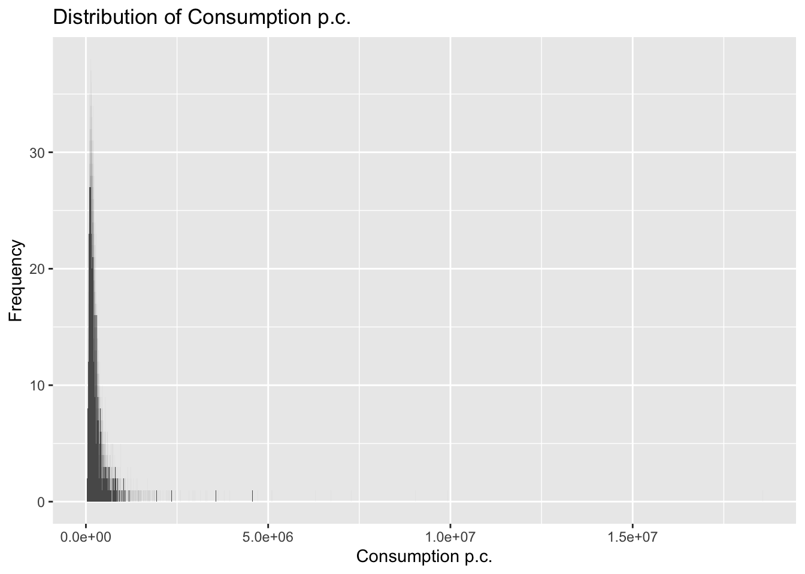
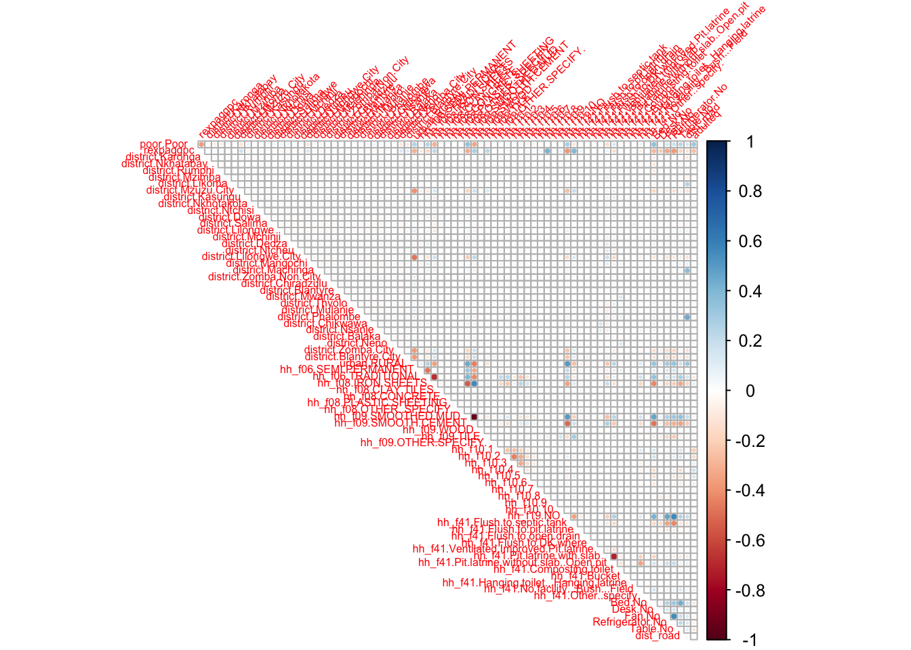
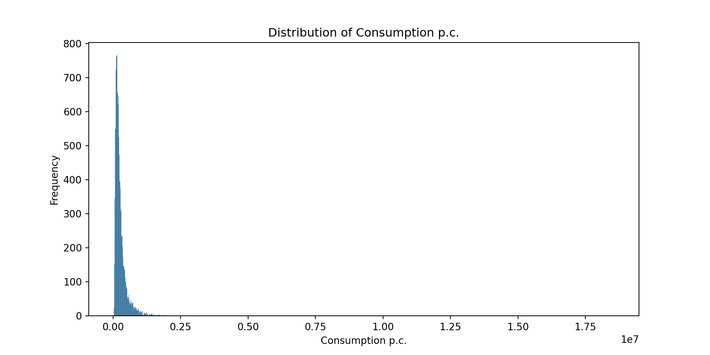
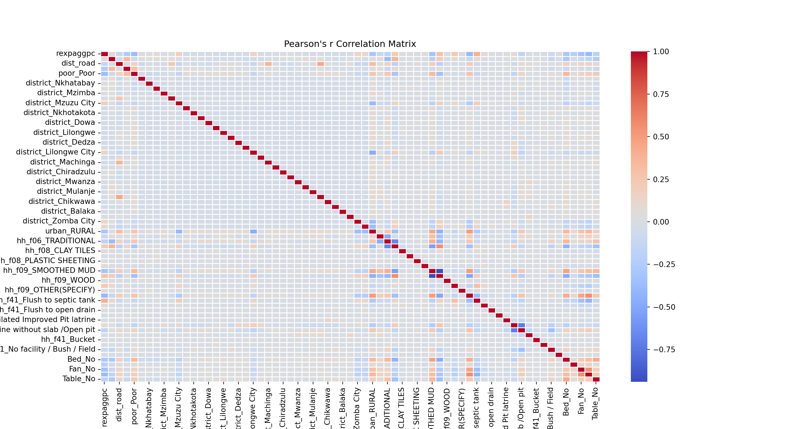
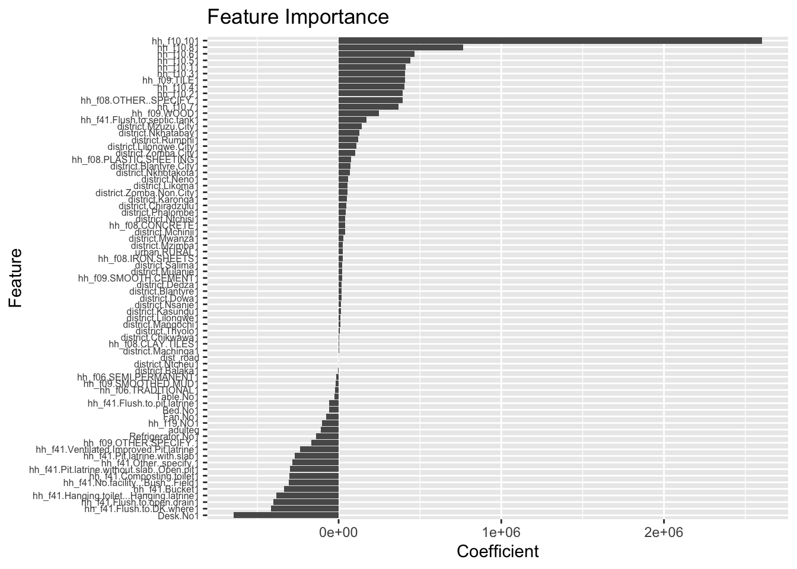
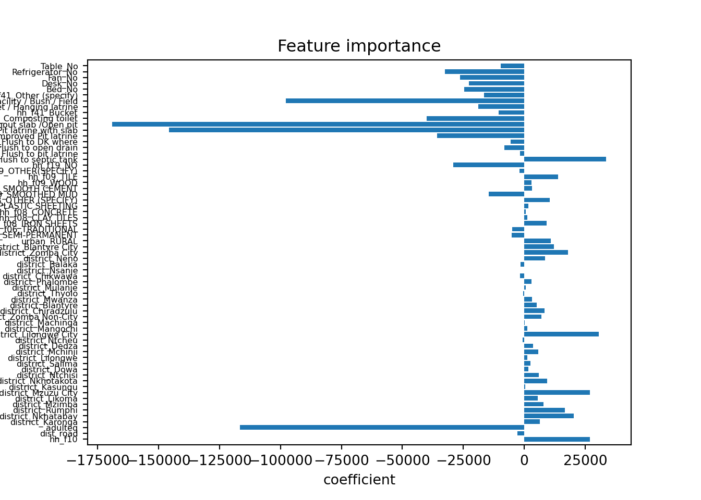

# Libraries for data-wrangling
library(tidyverse) # Collection of packages for data manipulation and visualization
library(skimr) # Quick data profiling and summary statistics
library(haven) # Import foreign statistical formats into R
library(fastDummies) # Convert variables into binary (dummy variables) fastly
# Libraries for data analysis and visualization
library(corrplot) # Correlation matrix visualization
library(modelsummary) # Model output summarization and tables
library(gt) # Table formatting and presentation
library(stargazer) # Statistical model output visualization
# Machine Learning library
library(caret) # Machine learning functions and model trainingPrediction Policy Problems
This section will cover:
Prediction Policy problems
Inference vs. prediction for policy analysis
Prediction framework: training - test data
Training error vs. test error
Assessing accuracy: bias-variance trade-off
Introducing the Prediction Policy Framework
In the video-lecture below you’ll be given a brief introduction to the prediction policy framework, and a primer on machine learning. Please take a moment to watch the 20 minute video.
Practical Example
You can download the dataset by clicking on the button below.
The script below is a step by step on how to go about coding a predictive model using a linear regression. Despite its simplicity and transparency, i.e. the ease with which we can interpret its results, a linear model is not without challenges in machine learning.
1. Preliminaries: working directory, libraries, data upload.
# Libraries for data-wrangling
import pandas as pd # Data manipulation and analysis with DataFrames
import numpy as np # Numerical computing and array operations
import os # Operating system interface for file/directory operations
import skimpy # Quick data profiling and summary statistics
# Libraries for data analysis and visualization
import matplotlib.pyplot as plt # Basic plotting and visualization
import seaborn as sns # Statistical data visualization built on matplotlib
import pickle # Object serialization for saving/loading Python objects
# Machine Learning Library
from sklearn.model_selection import train_test_split # Split datasets into train/test sets
from sklearn.linear_model import LinearRegression # OLS regression
from sklearn.metrics import root_mean_squared_error # Estimate RMSE
from sklearn.metrics import r2_score # Estimate R^2
from sklearn.preprocessing import StandardScaler # Feature scaling and normalizationLoading the dataset The data set comes as .dta file (STATA file) and not as a standard comma separated file (.csv). While the file has the same tabular structure, STATA files have variable labels, i.e. short texts that describe the variables with rather cryptic variable names. We can preserve these variable lables and store them as a separate object that we can use for quick variable look-ups.
# Set working directory
setwd('/Users/lucas/Documents/UNU-CDO/courses/ml4p/ml4p-website-v2')
# Read the Stata file with labels preserved
malawi <- read_dta("data/malawi.dta")
# Get variable labels
variable_labels <- sapply(malawi, function(x) attr(x, "label"))
# List all variables and their corresponding labels. For more details, check the questionnaire. Variable names correspond to the question numbers (hh=household module; com=community module)
print(variable_labels) case_id
"Unique Household Identifier"
HHID
"Survey Solutions Unique HH Identifier"
ea_id
"Unique Enumeration Area Code"
region
"IHS5 2019 Region location"
district
"IHS5 2019 District Location"
reside
"IHS5 2019 Rural Residence"
interviewDate
"Interview Date"
hh_wgt
"Household Sampling Weight"
hh_a22
"SUPERVISOR"
hh_a23
"ENUMERATOR"
hh_g09
"Over the past one week (7 days), did any people that you did nonlist as househol"
hh_o0a
"..Any children who are 15 years..do not live in this HH?"
hh_w01
"Over the past two years, did any member of the household die..."
hhsize
"Household size"
hh_f01
"Do you own or are purchasing this property, is it provided to you by an emp"
hh_f01_2
"Type of ownership doc.... on which this property is located?"
hh_f01_3
"ENUMERATOR: WAS RESPONDENT ABLE TO PROVIDE DOCUMENTATION?"
hh_f05
"How many years ago was this dwelling built? How old is it?<br><br> YEARS"
hh_f06
"WHAT GENERAL TYPE OF CONSTRUCTION MATERIALS ARE USED FOR THE DWELLING?"
hh_f07
"OUTER WALLS OF THE MAIN DWELLING OF THE HH ARE PREDOMINANTLY MADE OF WHAT MATERI"
hh_f07_oth
"SPECIFY MATERIAL THE OUTER WALLS OF THE MAIN DWELLING OF THE HH ARE PREDOMINANTL"
hh_f08
"The roof of the main dwelling is predominantly made of what material?"
hh_f08_oth
"SPECIFY WHAT MATERIAL THE ROOF OF THE MAIN DWELLING IS PREDOMINANTLY MADE OF"
hh_f09
"THE FLOOR OF THE MAIN DWELLING IS PREDOMINANTLY MADE OF WHAT MATERIAL?"
hh_f09_oth
"SPECIFY WHAT MATERIAL THE FLOOR OF THE MAIN DWELLING IS PREDOMINANTLY MADE OF"
hh_f10
"How many separate rooms do the members of your household upy?"
hh_f11
"What is your main source of lighting fuel?"
hh_f11_oth
"Specify your main source of lighting fuel"
hh_f12
"What is your main source of cooking fuel?"
hh_f12_oth
"Specify your main source of cooking fuel."
hh_f19
"Do you have electricity working in your dwelling?"
hh_f21
"Do you get your electricity via ESCOM?"
hh_f25
"How much did you last pay for electricity?"
hh_f26a
"To what length of time does this cost for electricity refer?"
hh_f31
"Is there a MTL telephone in working condition in the dwelling unit?"
hh_f34
"How many working cell phones in total does your household own?"
hh_f36
"What is your main source of drinking water?"
hh_f36_1
"What is the main souce of water used by members of your household for purposes s"
hh_f36_1oth
"Specify other main source of water."
hh_f36_oth
"Specify your main source of drinking water."
hh_f39
"Do you use the main water source..."
hh_f40_1
"F40_1. Is there a place for household members to wash their hands in the dwellin"
hh_f40_2
"F40_2. We would like to learn about where members of this household wash their h"
hh_f40_4
"F40_4. Is soap or detergent present at the place for handwashing?"
hh_f41
"What kind of toilet facility does your household use?"
hh_f41_oth
"Specify what kind of toilet facility your household uses"
hh_f43
"What kind of rubbish disposal facilities does your household use?"
hh_f43_oth
"Specify the kind of rubbish disposal facilities your household uses."
hh_f44
"Do any members of your HH sleep under a bed net... during the year?"
hh_f50
"Does any other member of your household... currently have an account?"
hh_f52
"...have you used an account.. of someone else in your HH or your community?"
Air_conditioner
"Air_conditioner hh_l01"
Bed
"Bed hh_l01"
Beerbrewing_dru
"Beerbrewing_dru hh_l01"
Bicycle
"Bicycle hh_l01"
Car
"Car hh_l01"
Chair
"Chair hh_l01"
Clock
"Clock hh_l01"
Coffee_table_fo
"Coffee_table_fo hh_l01"
Computer_equipm
"Computer_equipm hh_l01"
Cupboard_drawer
"Cupboard_drawer hh_l01"
Desk
"Desk hh_l01"
Electric_Kettle
"Electric_Kettle hh_l01"
Electric_or_gas
"Electric_or_gas hh_l01"
Fan
"Fan hh_l01"
Generator
"Generator hh_l01"
Iron_for_pressi
"Iron_for_pressi hh_l01"
Keroseneparaffi
"Keroseneparaffi hh_l01"
Lantern_paraffi
"Lantern_paraffi hh_l01"
Lorry
"Lorry hh_l01"
Minibus
"Minibus hh_l01"
Mortarpestle_mt
"Mortarpestle_mt hh_l01"
Motorcycle__Sco
"Motorcycle__Sco hh_l01"
Radio_wireless
"Radio_wireless hh_l01"
Radio_with_flas
"Radio_with_flas hh_l01"
Refrigerator
"Refrigerator hh_l01"
Sattelite_dish
"Sattelite_dish hh_l01"
Sewing_machine
"Sewing_machine hh_l01"
Solar_panel
"Solar_panel hh_l01"
Table
"Table hh_l01"
Tape_or_CDDVD_p
"Tape_or_CDDVD_p hh_l01"
Television
"Television hh_l01"
Upholstered_cha
"Upholstered_cha hh_l01"
VCR
"VCR hh_l01"
Washing_machine
"Washing_machine hh_l01"
dist_road
"HH Distance in (KMs) to Nearest Major Road"
dist_agmrkt
"HH Distance in (KMs) to Nearest Agricultural Market"
dist_auction
"HH Distance in (KMs) to Nearest Tobacco Auction Floor"
dist_admarc
"HH Distance in (KMs) to Nearest ADMARC Outlet"
dist_border
"HH Distance in (KMs) to Nearest Land Border Crossing"
dist_popcenter
"HH Distance in (KMs) to Nearest Population Center with +20,000"
dist_boma
"HH Distance in (KMs) to the Boma of Current District of Residence"
ssa_aez09
"Agro-ecological Zones"
twi_mwi
"Potential Wetness Index"
sq1
"Nutrient availability"
sq2
"Nutrient retention capacity"
sq3
"Rooting conditions"
sq4
"Oxygen availability to roots"
sq5
"Excess salts"
sq6
"Toxicity"
sq7
"Workability (constraining field management)"
af_bio_1_x
"Annual Mean Temperature (degC * 10)"
af_bio_8_x
"Mean Temperature of Wettest Quarter (degC * 10)"
af_bio_12_x
"Annual Precipitation (mm)"
af_bio_13_x
"Precipitation of Wettest Month (mm)"
af_bio_16_x
"Precipitation of Wettest Quarter"
afmnslp_pct
"Slope (percent)"
srtm_1k
"Elevation (m)"
popdensity
"2018 Population density per km2"
cropshare
"2018 Percent cropland in local area"
h2018_tot
"12-month total rainfall (mm) ending June 2018"
h2018_wetQstart
"Start of wettest quarter in dekads 1-36, where first dekad of July 2017 =1"
h2018_wetQ
"Total rainfall in wettest quarter of 12-month period ending June 2018"
h2019_tot
"12-month total rainfall (mm) ending June 2019"
h2019_wetQstart
"Start of wettest quarter in dekads 1-36, where first dekad of July 2018 =1"
h2019_wetQ
"Total rainfall in wettest quarter of 12-month period ending June 2019"
anntot_avg
"Avg 12-month total rainfall(mm) for July-June"
wetQ_avgstart
"Avg start of wettest quarter in dekads 1-36, where first week of July =1"
wetQ_avg
"Avg total rainfall in wettest quarter(mm) within 12-month periods from July-June"
h2018_ndvi_avg
"Average NDVI value in primary growing season ending in 2018"
h2018_ndvi_max
"Maximum dekadal NDVI value in primary growing season ending in 2018"
h2019_ndvi_avg
"Average NDVI value in primary growing season ending in 2019"
h2019_ndvi_max
"Maximum dekadal NDVI value in primary growing season ending in 2019"
ndvi_avg
"Long-term average NDVI value in primary growing season (highest quarter)"
ndvi_max
"Long-term maximum dekadal NDVI value in primary growing season (highest quarter)"
ea_lat_mod
"Latitude Modified"
ea_lon_mod
"Longitude Modified"
urban
"Urban/rural"
adulteq
"Adult equivalence"
expagg
"Total nominal annual consumption per household"
rexpagg
"Total real annual consumption per household"
expaggpc
"Total nominal annual per capita consumption"
rexpaggpc
"Total real annual per capita consumption"
pline
"Poverty line in April 2019 prices"
poor
"Dummy for poor households below national poverty line"
upoor
"Dummy for ultra-poor households below national food poverty line"
com_ca01
"DISTRICT"
com_ca02
"CA2. TA, STA, or URBAN WARD"
com_ca06
"Enumerator Code"
InterviewDate
"Interview Start Date"
com_cc01
"In the last five years, have there been more people who moved into this communit"
com_cc02
"What is the population of this community?"
com_cc03
"How many households are found in this community?"
com_cc03_1
"How many child-headed households are found in this community?"
com_cc04a
"What are the religions practiced by residents of this community?(1st)"
com_cc04c
"What are the religions practiced by residents of this community?(2nd)"
com_cc04d
"Number of Households Practising religion listed in C"
com_cc04e
"What are the religions practiced by residents of this community?(3rd)"
com_cc04f
"Number of Households Practising religion listed in E"
com_cc05a
"What are the languages spoken at home by residents of this community? (1st)"
com_cc05b
"Number of households that speak language in A"
com_cc05c
"What are the languages spoken at home by residents of this community? (2nd)"
com_cc05d
"Number of households that speak language in C"
com_cc05e
"What are the languages spoken at home by residents of this community? (3rd)"
com_cc05f
"Number of households that speak language in E"
com_cc06
"CC6. Do individuals in this community trace their descent through their father,"
com_cc07a
"First common type of marriage witnessed in this community?"
com_cc07b
"Number of Households United through type of marriage in A"
com_cc07c
"Second common type of marriage witnessed in this community?"
com_cc07d
"Number of Households United through type of marriage in C"
com_cc07e
"Third common type of marriage witnessed in this community?"
com_cc07f
"Number of Households United through type of marriage in E"
com_cc08
"How many polygamous house-holds are found in this community?"
com_cc09
"What is the most common use of land in this community?"
com_cc10
"Is the land of the community..."
com_cc11
"What share of the land in your community is in bush?"
com_cc12
"What share of the agricultural land in your community is in estates?"
com_cc13
"What share of the land in your community is in forest, and not used for agricult"
com_cc14
"What share of the registered voters from this community voted in the 2014"
com_cd01
"CD1. WHAT IS THE TYPE OF MAIN ACCESS ROAD SURFACE IN THIS COMMUNITY?"
com_cd03
"CD3. Do vehicles pass on the main road in this community throughout the year?"
com_cd04
"..past 12 months, how many months was the main road passable by a mini-bus?"
com_cd05
"..past 12 months, how many months was the main road passable by a lorry?"
com_cd06
"CD6. Do public buses, mini-buses, or regular matola stop in this community?"
com_cd09
"CD9. IS THE COMMUNITY IN A DISTRICT BOMA?"
com_cd11
"..total fare cost to go by regular matola from here or the nearest matola stage"
com_cd12
"CD12. IS THE COMMUNITY IN A MAJOR URBAN CENTRE?"
com_cd14
"..total fare to go by regular matola from here or the nearest matola stage to th"
com_cd15
"CD15. Is there a daily market in this community?"
com_cd17
"CD17. Is there a larger weekly market in this community?"
com_cd19
"CD19. Is there a permanent ADMARC market in this community?"
com_cd21
"CD21. Is there a post office in this community?"
com_cd23
"CD23. Is there a place to make a telephone call in this community - e.g., a publ"
com_cd25
"CD25. How many churches (congregations) are there in this community?"
com_cd26
"CD26. How many mosques are there in this community?"
com_cd_26_1
"CD26_1. Is there a Community Based Child Care Center/ Nursery School in this com"
com_cd28
"CD28. At the nearest government primary school, how many teachers are there?"
com_cd29
"..nearest gov't primary school, # pupils are there who are regularly in attendan"
com_cd30
"..nearest gov't primary school, are all of the class-rooms built of brick with i"
com_cd31
"# classes do not meet in classrooms built of brick with iron sheet roofs/other p"
com_cd32
"Are there any school feeding programmes at government primary schools in this co"
com_cd33
"What proportion of the primary school children in this community receive food un"
com_cd34
"Is the food given already cooked and is eaten at school; or is it given as ratio"
com_cd35
"CD35. Is the nearest government primary school electrified?"
com_cd37
"CD37. At the nearest government secondary school, how many teachers are there?"
com_cd38
"At the nearest gov't sec. school, how many pupils are there who are regularly in"
com_cd39
"CD39. Is the nearest government secondary school electrified?"
com_cd41
"At the nearest community day secondary school, how many teachers are there?"
com_cd42
"At the nearest community day secondary school, how many pupils are there who are"
com_cd43
"CD43. Is the nearest community day secondary school electrified?"
com_cd44
"# primary schools run by religious organizations are there in this community?"
com_cd45
"# secondary schools run by religious organizations are there in this community?"
com_cd46
"CD46. How many private primary schools are there in this community?"
com_cd47
"CD47. How many private secondary schools are there in this community?"
com_cd_47_1
"CD47_1. Is there an adult literacy center in this community?"
com_cd48
"Is there a place in this community,to purchase common medicines such as pain kil"
com_cd49_1
"CD49_1. Is there a nearby place where you can get information and services abou"
com_cd49_2
"CD49_2. Is there a nearby place where you can get information and services about"
com_cd50
"CD50. Is there a health clinic (Chipatala) in this community?"
com_cd52
"Is there a nurse, midwife or medical assistant permanently working at this healt"
com_cd53
"CD53. Is this health facility…"
com_cd54
"CD54. Is this health facility electrified?"
com_cd55
"CD55. Is there a village health clinic in this community?"
com_cd56
"CD56. Does the village health clinic have a Health Surveillance Assistant (HSA)?"
com_cd57
"CD57. Is the HSA…"
com_cd58
"CD58. Does the HSA live in this community?"
com_cd59
"CD59. Does the HSA have a drug box?"
com_cd63
"CD63. What is the cost of these treated bed nets (SINGLE BED SIZE)?\n\nMK"
com_cd65a
"CD65. What sort of support do they provide? Do they provide::Medical care &"
com_cd65b
"CD65. What sort of support do they provide? Do they provide::Cash grants"
com_cd65c
"CD65. What sort of support do they provide? Do they provide::Food or other in-ki"
com_cd65d
"CD65. What sort of support do they provide? Do they provide::Mental & spirit"
com_cd65e
"CD65. What sort of support do they provide? Do they provide::Support & care"
com_cd65f
"CD65. What sort of support do they provide? Do they provide::Other (specify)"
com_cd65_oth
"CD65_oth. Please specify the other support provided."
com_cd66
"Is there a commercial bank in this community (NBM, Savings Bank, Stanbic?"
com_cd68
"CD68. Is there a microfinance institution in this community (SACCO, FINCA, etc.)"
com_cd70
"Is a resident of this..the MP for the constituency of which this community is a"
com_cd71
"Did the MP for this area visit..past 3 months to speak and listen to people?"
com_ce01a
"..activities that are important sources of employment for individuals..?(1st)"
com_ce01a_oth
"Specify other sources of employement"
com_ce01b_oth
"Specify other sources of employement"
com_ce01c_oth
"Specify other sources of employement"
com_ce02
"Do people..leave temporarily during certain times of the year to look for work?"
com_ce03
"What share of house-holds..have members leaving temporarily to look for work?"
com_ce04
"Where do most of them go?"
com_ce05a
"What type of work do they look for? (1st Type)"
com_ce05b
"What type of work do they look for? (2nd Type)"
com_ce06
"Do people come..during certain times of the year to look for work?"
com_ce07
"Where do most of them come from?"
com_ce08_1
"What is the daily ganyu wage for an adult male labourer?"
com_ce08_2
"What is the daily ganyu wage for an adult female labourer?"
com_ce08a
"What type of work do they look for? (1st Type)"
com_ce08b
"What type of work do they look for? (2nd Type)"
com_ce08a_oth
"Specify other type of work people look for"
com_ce08b_oth
"Specify other type of work people look for"
com_ce09
"Is there a MASAF programme..which hires residents who are in need of work?"
com_ce10
"What is the wage rate on the MASAF project for an adult male labourer? MK"
com_ce12
"What share of adult males in this community work for the MASAF project?"
com_ce13
"What is the wage rate on the MASAF project for an adult female labourer?"
com_ce15
"What share of adult females in this community work for the MASAF project?"
com_cf01
"Do any households farm crops or keep livestock in this community?"
com_cf02
"..in most years, in which half of which month..normally plant their maize?"
com_cf03
"..in most years, in which half of which month..normally harvest their maize?"
com_cf03_1
"In most years, what proportion of cropland is burned post-harvest?"
com_cf03_2
"Which system best describes the use of cropland post-harvest?"
com_cf07
"..Assist. Agricultural Extension Development Officer live in this community?"
com_cf09
"Is there an irrigation scheme in this community?"
com_cf10
"How many farmers from the community in total farm in the irrigation scheme?"
com_cf11
"How many sellers of fertilizer are there in the community?NUMBER"
com_cf12
"How many sellers of hybrid maize seed are there in the community?NUMBER"
com_cf13
"..local warehouse that the community could use to store crops prior sale?"
com_cf17a
"..community residents expected to pay the vil..headman when they purchase land?"
com_cf17b
"..community residents expected to pay the vi..headman when they sell land?"
com_cf17c
"..community residents..to pay vil..headman when granted access to communal land?"
com_cf22
"About how many households in the community practice zero tillage?"
com_cf23
"About how many households in the community practice sow seeds in planting"
com_cf24
"About how many households in the community practice have earth or stone bunds?"
com_cf25
"About how many households in the community practice terraces?"
com_cf26
"About how many households in the community practice practice agro-forestry"
com_cf27
"About how many households in the community practice plant legume cover crops?"
com_cf28
"CF28. Are there any agriculture-based projects operating in the community?" # Set working directory
os.chdir('/Users/lucas/Documents/UNU-CDO/courses/ml4p/ml4p-website-v2')
# Load malawi.dta variable labels
iterator = pd.read_stata('data/malawi.dta', iterator=True)
variable_labels = iterator.variable_labels()
# List all variables and their corresponding labels. For more details, check the questionnaire. Variable names correspond to the question numbers (hh=household module; com=community module)
print(variable_labels){'case_id': 'Unique Household Identifier', 'HHID': 'Survey Solutions Unique HH Identifier', 'ea_id': 'Unique Enumeration Area Code', 'region': 'IHS5 2019 Region location', 'district': 'IHS5 2019 District Location', 'reside': 'IHS5 2019 Rural Residence', 'interviewDate': 'Interview Date', 'hh_wgt': 'Household Sampling Weight', 'hh_a22': 'SUPERVISOR', 'hh_a23': 'ENUMERATOR', 'hh_g09': 'Over the past one week (7 days), did any people that you did nonlist as househol', 'hh_o0a': '..Any children who are 15 years..do not live in this HH?', 'hh_w01': 'Over the past two years, did any member of the household die... ', 'hhsize': 'Household size', 'hh_f01': 'Do you own or are purchasing this property, is it provided to you by an emp', 'hh_f01_2': 'Type of ownership doc.... on which this property is located?', 'hh_f01_3': 'ENUMERATOR: WAS RESPONDENT ABLE TO PROVIDE DOCUMENTATION?', 'hh_f05': 'How many years ago was this dwelling built? How old is it?<br><br> YEARS', 'hh_f06': 'WHAT GENERAL TYPE OF CONSTRUCTION MATERIALS ARE USED FOR THE DWELLING?', 'hh_f07': 'OUTER WALLS OF THE MAIN DWELLING OF THE HH ARE PREDOMINANTLY MADE OF WHAT MATERI', 'hh_f07_oth': 'SPECIFY MATERIAL THE OUTER WALLS OF THE MAIN DWELLING OF THE HH ARE PREDOMINANTL', 'hh_f08': 'The roof of the main dwelling is predominantly made of what material?', 'hh_f08_oth': 'SPECIFY WHAT MATERIAL THE ROOF OF THE MAIN DWELLING IS PREDOMINANTLY MADE OF', 'hh_f09': 'THE FLOOR OF THE MAIN DWELLING IS PREDOMINANTLY MADE OF WHAT MATERIAL?', 'hh_f09_oth': 'SPECIFY WHAT MATERIAL THE FLOOR OF THE MAIN DWELLING IS PREDOMINANTLY MADE OF', 'hh_f10': 'How many separate rooms do the members of your household upy?', 'hh_f11': 'What is your main source of lighting fuel?', 'hh_f11_oth': 'Specify your main source of lighting fuel', 'hh_f12': 'What is your main source of cooking fuel?', 'hh_f12_oth': 'Specify your main source of cooking fuel.', 'hh_f19': 'Do you have electricity working in your dwelling?', 'hh_f21': 'Do you get your electricity via ESCOM?', 'hh_f25': 'How much did you last pay for electricity?', 'hh_f26a': 'To what length of time does this cost for electricity refer?', 'hh_f31': 'Is there a MTL telephone in working condition in the dwelling unit?', 'hh_f34': 'How many working cell phones in total does your household own?', 'hh_f36': 'What is your main source of drinking water?', 'hh_f36_1': 'What is the main souce of water used by members of your household for purposes s', 'hh_f36_1oth': 'Specify other main source of water.', 'hh_f36_oth': 'Specify your main source of drinking water.', 'hh_f39': 'Do you use the main water source...', 'hh_f40_1': 'F40_1. Is there a place for household members to wash their hands in the dwellin', 'hh_f40_2': 'F40_2. We would like to learn about where members of this household wash their h', 'hh_f40_4': 'F40_4. Is soap or detergent present at the place for handwashing?', 'hh_f41': 'What kind of toilet facility does your household use?', 'hh_f41_oth': 'Specify what kind of toilet facility your household uses', 'hh_f43': 'What kind of rubbish disposal facilities does your household use?', 'hh_f43_oth': 'Specify the kind of rubbish disposal facilities your household uses.', 'hh_f44': 'Do any members of your HH sleep under a bed net... during the year?', 'hh_f50': 'Does any other member of your household... currently have an account?', 'hh_f52': '...have you used an account.. of someone else in your HH or your community?', 'Air_conditioner': 'Air_conditioner hh_l01', 'Bed': 'Bed hh_l01', 'Beerbrewing_dru': 'Beerbrewing_dru hh_l01', 'Bicycle': 'Bicycle hh_l01', 'Car': 'Car hh_l01', 'Chair': 'Chair hh_l01', 'Clock': 'Clock hh_l01', 'Coffee_table_fo': 'Coffee_table_fo hh_l01', 'Computer_equipm': 'Computer_equipm hh_l01', 'Cupboard_drawer': 'Cupboard_drawer hh_l01', 'Desk': 'Desk hh_l01', 'Electric_Kettle': 'Electric_Kettle hh_l01', 'Electric_or_gas': 'Electric_or_gas hh_l01', 'Fan': 'Fan hh_l01', 'Generator': 'Generator hh_l01', 'Iron_for_pressi': 'Iron_for_pressi hh_l01', 'Keroseneparaffi': 'Keroseneparaffi hh_l01', 'Lantern_paraffi': 'Lantern_paraffi hh_l01', 'Lorry': 'Lorry hh_l01', 'Minibus': 'Minibus hh_l01', 'Mortarpestle_mt': 'Mortarpestle_mt hh_l01', 'Motorcycle__Sco': 'Motorcycle__Sco hh_l01', 'Radio_wireless': 'Radio_wireless hh_l01', 'Radio_with_flas': 'Radio_with_flas hh_l01', 'Refrigerator': 'Refrigerator hh_l01', 'Sattelite_dish': 'Sattelite_dish hh_l01', 'Sewing_machine': 'Sewing_machine hh_l01', 'Solar_panel': 'Solar_panel hh_l01', 'Table': 'Table hh_l01', 'Tape_or_CDDVD_p': 'Tape_or_CDDVD_p hh_l01', 'Television': 'Television hh_l01', 'Upholstered_cha': 'Upholstered_cha hh_l01', 'VCR': 'VCR hh_l01', 'Washing_machine': 'Washing_machine hh_l01', 'dist_road': 'HH Distance in (KMs) to Nearest Major Road', 'dist_agmrkt': 'HH Distance in (KMs) to Nearest Agricultural Market', 'dist_auction': 'HH Distance in (KMs) to Nearest Tobacco Auction Floor', 'dist_admarc': 'HH Distance in (KMs) to Nearest ADMARC Outlet', 'dist_border': 'HH Distance in (KMs) to Nearest Land Border Crossing', 'dist_popcenter': 'HH Distance in (KMs) to Nearest Population Center with +20,000', 'dist_boma': 'HH Distance in (KMs) to the Boma of Current District of Residence', 'ssa_aez09': 'Agro-ecological Zones ', 'twi_mwi': 'Potential Wetness Index', 'sq1': 'Nutrient availability', 'sq2': 'Nutrient retention capacity', 'sq3': 'Rooting conditions', 'sq4': 'Oxygen availability to roots', 'sq5': 'Excess salts', 'sq6': 'Toxicity', 'sq7': 'Workability (constraining field management)', 'af_bio_1_x': 'Annual Mean Temperature (degC * 10)', 'af_bio_8_x': 'Mean Temperature of Wettest Quarter (degC * 10)', 'af_bio_12_x': 'Annual Precipitation (mm)', 'af_bio_13_x': 'Precipitation of Wettest Month (mm)', 'af_bio_16_x': 'Precipitation of Wettest Quarter', 'afmnslp_pct': 'Slope (percent)', 'srtm_1k': 'Elevation (m)', 'popdensity': '2018 Population density per km2', 'cropshare': '2018 Percent cropland in local area', 'h2018_tot': '12-month total rainfall (mm) ending June 2018', 'h2018_wetQstart': 'Start of wettest quarter in dekads 1-36, where first dekad of July 2017 =1', 'h2018_wetQ': 'Total rainfall in wettest quarter of 12-month period ending June 2018', 'h2019_tot': '12-month total rainfall (mm) ending June 2019', 'h2019_wetQstart': 'Start of wettest quarter in dekads 1-36, where first dekad of July 2018 =1', 'h2019_wetQ': 'Total rainfall in wettest quarter of 12-month period ending June 2019', 'anntot_avg': 'Avg 12-month total rainfall(mm) for July-June', 'wetQ_avgstart': 'Avg start of wettest quarter in dekads 1-36, where first week of July =1', 'wetQ_avg': 'Avg total rainfall in wettest quarter(mm) within 12-month periods from July-June', 'h2018_ndvi_avg': 'Average NDVI value in primary growing season ending in 2018', 'h2018_ndvi_max': 'Maximum dekadal NDVI value in primary growing season ending in 2018', 'h2019_ndvi_avg': 'Average NDVI value in primary growing season ending in 2019', 'h2019_ndvi_max': 'Maximum dekadal NDVI value in primary growing season ending in 2019', 'ndvi_avg': 'Long-term average NDVI value in primary growing season (highest quarter)', 'ndvi_max': 'Long-term maximum dekadal NDVI value in primary growing season (highest quarter)', 'ea_lat_mod': 'Latitude Modified', 'ea_lon_mod': 'Longitude Modified', 'urban': 'Urban/rural', 'adulteq': 'Adult equivalence', 'expagg': 'Total nominal annual consumption per household', 'rexpagg': 'Total real annual consumption per household', 'expaggpc': 'Total nominal annual per capita consumption', 'rexpaggpc': 'Total real annual per capita consumption', 'pline': 'Poverty line in April 2019 prices', 'poor': 'Dummy for poor households below national poverty line', 'upoor': 'Dummy for ultra-poor households below national food poverty line', 'com_ca01': 'DISTRICT', 'com_ca02': 'CA2. TA, STA, or URBAN WARD', 'com_ca06': 'Enumerator Code', 'InterviewDate': 'Interview Start Date', 'com_cc01': 'In the last five years, have there been more people who moved into this communit', 'com_cc02': 'What is the population of this community?', 'com_cc03': 'How many households are found in this community?', 'com_cc03_1': 'How many child-headed households are found in this community?', 'com_cc04a': 'What are the religions practiced by residents of this community?(1st)', 'com_cc04c': 'What are the religions practiced by residents of this community?(2nd)', 'com_cc04d': 'Number of Households Practising religion listed in C', 'com_cc04e': 'What are the religions practiced by residents of this community?(3rd)', 'com_cc04f': 'Number of Households Practising religion listed in E', 'com_cc05a': 'What are the languages spoken at home by residents of this community? (1st)', 'com_cc05b': 'Number of households that speak language in A', 'com_cc05c': 'What are the languages spoken at home by residents of this community? (2nd)', 'com_cc05d': 'Number of households that speak language in C', 'com_cc05e': 'What are the languages spoken at home by residents of this community? (3rd)', 'com_cc05f': 'Number of households that speak language in E', 'com_cc06': 'CC6. Do individuals in this community trace their descent through their father, ', 'com_cc07a': 'First common type of marriage witnessed in this community?', 'com_cc07b': 'Number of Households United through type of marriage in A', 'com_cc07c': 'Second common type of marriage witnessed in this community?', 'com_cc07d': 'Number of Households United through type of marriage in C', 'com_cc07e': 'Third common type of marriage witnessed in this community?', 'com_cc07f': 'Number of Households United through type of marriage in E', 'com_cc08': 'How many polygamous house-holds are found in this community?', 'com_cc09': 'What is the most common use of land in this community?', 'com_cc10': 'Is the land of the community...', 'com_cc11': 'What share of the land in your community is in bush?', 'com_cc12': 'What share of the agricultural land in your community is in estates?', 'com_cc13': 'What share of the land in your community is in forest, and not used for agricult', 'com_cc14': 'What share of the registered voters from this community voted in the 2014 ', 'com_cd01': 'CD1. WHAT IS THE TYPE OF MAIN ACCESS ROAD SURFACE IN THIS COMMUNITY?', 'com_cd03': 'CD3. Do vehicles pass on the main road in this community throughout the year?', 'com_cd04': '..past 12 months, how many months was the main road passable by a mini-bus?', 'com_cd05': '..past 12 months, how many months was the main road passable by a lorry?', 'com_cd06': 'CD6. Do public buses, mini-buses, or regular matola stop in this community?', 'com_cd09': 'CD9. IS THE COMMUNITY IN A DISTRICT BOMA?', 'com_cd11': '..total fare cost to go by regular matola from here or the nearest matola stage ', 'com_cd12': 'CD12. IS THE COMMUNITY IN A MAJOR URBAN CENTRE?', 'com_cd14': '..total fare to go by regular matola from here or the nearest matola stage to th', 'com_cd15': 'CD15. Is there a daily market in this community?', 'com_cd17': 'CD17. Is there a larger weekly market in this community?', 'com_cd19': 'CD19. Is there a permanent ADMARC market in this community?', 'com_cd21': 'CD21. Is there a post office in this community?', 'com_cd23': 'CD23. Is there a place to make a telephone call in this community - e.g., a publ', 'com_cd25': 'CD25. How many churches (congregations) are there in this community?', 'com_cd26': 'CD26. How many mosques are there in this community?', 'com_cd_26_1': 'CD26_1. Is there a Community Based Child Care Center/ Nursery School in this com', 'com_cd28': 'CD28. At the nearest government primary school, how many teachers are there?', 'com_cd29': "..nearest gov't primary school, # pupils are there who are regularly in attendan", 'com_cd30': "..nearest gov't primary school, are all of the class-rooms built of brick with i", 'com_cd31': '# classes do not meet in classrooms built of brick with iron sheet roofs/other p', 'com_cd32': 'Are there any school feeding programmes at government primary schools in this co', 'com_cd33': 'What proportion of the primary school children in this community receive food un', 'com_cd34': 'Is the food given already cooked and is eaten at school; or is it given as ratio', 'com_cd35': 'CD35. Is the nearest government primary school electrified?', 'com_cd37': 'CD37. At the nearest government secondary school, how many teachers are there?', 'com_cd38': "At the nearest gov't sec. school, how many pupils are there who are regularly in", 'com_cd39': 'CD39. Is the nearest government secondary school electrified?', 'com_cd41': 'At the nearest community day secondary school, how many teachers are there?', 'com_cd42': 'At the nearest community day secondary school, how many pupils are there who are', 'com_cd43': 'CD43. Is the nearest community day secondary school electrified?', 'com_cd44': '# primary schools run by religious organizations are there in this community?', 'com_cd45': '# secondary schools run by religious organizations are there in this community?', 'com_cd46': 'CD46. How many private primary schools are there in this community?', 'com_cd47': 'CD47. How many private secondary schools are there in this community?', 'com_cd_47_1': 'CD47_1. Is there an adult literacy center in this community?', 'com_cd48': 'Is there a place in this community,to purchase common medicines such as pain kil', 'com_cd49_1': 'CD49_1. Is there a nearby place where you can get information and services abou', 'com_cd49_2': 'CD49_2. Is there a nearby place where you can get information and services about', 'com_cd50': 'CD50. Is there a health clinic (Chipatala) in this community?', 'com_cd52': 'Is there a nurse, midwife or medical assistant permanently working at this healt', 'com_cd53': 'CD53. Is this health facility…', 'com_cd54': 'CD54. Is this health facility electrified?', 'com_cd55': 'CD55. Is there a village health clinic in this community?', 'com_cd56': 'CD56. Does the village health clinic have a Health Surveillance Assistant (HSA)?', 'com_cd57': 'CD57. Is the HSA…', 'com_cd58': 'CD58. Does the HSA live in this community?', 'com_cd59': 'CD59. Does the HSA have a drug box?', 'com_cd63': 'CD63. What is the cost of these treated bed nets (SINGLE BED SIZE)?\n\nMK', 'com_cd65a': 'CD65. What sort of support do they provide? Do they provide::Medical care & ', 'com_cd65b': 'CD65. What sort of support do they provide? Do they provide::Cash grants', 'com_cd65c': 'CD65. What sort of support do they provide? Do they provide::Food or other in-ki', 'com_cd65d': 'CD65. What sort of support do they provide? Do they provide::Mental & spirit', 'com_cd65e': 'CD65. What sort of support do they provide? Do they provide::Support & care ', 'com_cd65f': 'CD65. What sort of support do they provide? Do they provide::Other (specify)', 'com_cd65_oth': 'CD65_oth. Please specify the other support provided.', 'com_cd66': 'Is there a commercial bank in this community (NBM, Savings Bank, Stanbic?', 'com_cd68': 'CD68. Is there a microfinance institution in this community (SACCO, FINCA, etc.)', 'com_cd70': 'Is a resident of this..the MP for the constituency of which this community is a ', 'com_cd71': 'Did the MP for this area visit..past 3 months to speak and listen to people?', 'com_ce01a': '..activities that are important sources of employment for individuals..?(1st)', 'com_ce01a_oth': 'Specify other sources of employement', 'com_ce01b_oth': 'Specify other sources of employement', 'com_ce01c_oth': 'Specify other sources of employement', 'com_ce02': 'Do people..leave temporarily during certain times of the year to look for work?', 'com_ce03': 'What share of house-holds..have members leaving temporarily to look for work?', 'com_ce04': 'Where do most of them go?', 'com_ce05a': 'What type of work do they look for? (1st Type)', 'com_ce05b': 'What type of work do they look for? (2nd Type)', 'com_ce06': 'Do people come..during certain times of the year to look for work?', 'com_ce07': 'Where do most of them come from?', 'com_ce08_1': 'What is the daily ganyu wage for an adult male labourer?', 'com_ce08_2': 'What is the daily ganyu wage for an adult female labourer?', 'com_ce08a': 'What type of work do they look for? (1st Type)', 'com_ce08b': 'What type of work do they look for? (2nd Type)', 'com_ce08a_oth': 'Specify other type of work people look for', 'com_ce08b_oth': 'Specify other type of work people look for', 'com_ce09': 'Is there a MASAF programme..which hires residents who are in need of work?', 'com_ce10': 'What is the wage rate on the MASAF project for an adult male labourer? MK', 'com_ce12': 'What share of adult males in this community work for the MASAF project?', 'com_ce13': 'What is the wage rate on the MASAF project for an adult female labourer?', 'com_ce15': 'What share of adult females in this community work for the MASAF project?', 'com_cf01': 'Do any households farm crops or keep livestock in this community?', 'com_cf02': '..in most years, in which half of which month..normally plant their maize?', 'com_cf03': '..in most years, in which half of which month..normally harvest their maize?', 'com_cf03_1': 'In most years, what proportion of cropland is burned post-harvest?', 'com_cf03_2': 'Which system best describes the use of cropland post-harvest?', 'com_cf07': '..Assist. Agricultural Extension Development Officer live in this community?', 'com_cf09': 'Is there an irrigation scheme in this community?', 'com_cf10': 'How many farmers from the community in total farm in the irrigation scheme?', 'com_cf11': 'How many sellers of fertilizer are there in the community?NUMBER', 'com_cf12': 'How many sellers of hybrid maize seed are there in the community?NUMBER', 'com_cf13': '..local warehouse that the community could use to store crops prior sale?', 'com_cf17a': '..community residents expected to pay the vil..headman when they purchase land?', 'com_cf17b': '..community residents expected to pay the vi..headman when they sell land?', 'com_cf17c': '..community residents..to pay vil..headman when granted access to communal land?', 'com_cf22': 'About how many households in the community practice zero tillage?', 'com_cf23': 'About how many households in the community practice sow seeds in planting ', 'com_cf24': 'About how many households in the community practice have earth or stone bunds?', 'com_cf25': 'About how many households in the community practice terraces?', 'com_cf26': 'About how many households in the community practice practice agro-forestry', 'com_cf27': 'About how many households in the community practice plant legume cover crops?', 'com_cf28': 'CF28. Are there any agriculture-based projects operating in the community?'}
# Read the Stata(.dta) file an import is a pandas dataframe
df = pd.read_stata('data/malawi.dta')2. Get to know your data: pre-processing and data familiarization.
# Let's have a look at our data frame 'malawi'
head(malawi)# A tibble: 6 × 272
case_id HHID ea_id region district reside interviewDate hh_wgt hh_a22
<chr> <chr> <chr> <dbl+l> <dbl+lbl> <dbl+l> <chr> <dbl> <dbl>
1 101011000014 7d78… 1010… 1 [Nor… 101 [Chi… 2 [RUR… 2019-08-29 93.7 14
2 101011000023 7144… 1010… 1 [Nor… 101 [Chi… 2 [RUR… 2019-08-29 93.7 14
3 101011000040 9936… 1010… 1 [Nor… 101 [Chi… 2 [RUR… 2019-08-28 93.7 14
4 101011000071 cc8f… 1010… 1 [Nor… 101 [Chi… 2 [RUR… 2019-08-29 93.7 14
5 101011000095 e50c… 1010… 1 [Nor… 101 [Chi… 2 [RUR… 2019-08-28 93.7 14
6 101011000115 4c60… 1010… 1 [Nor… 101 [Chi… 2 [RUR… 2019-08-29 93.7 14
# ℹ 263 more variables: hh_a23 <dbl>, hh_g09 <dbl+lbl>, hh_o0a <dbl+lbl>,
# hh_w01 <dbl+lbl>, hhsize <dbl>, hh_f01 <dbl+lbl>, hh_f01_2 <dbl+lbl>,
# hh_f01_3 <dbl+lbl>, hh_f05 <dbl>, hh_f06 <dbl+lbl>, hh_f07 <dbl+lbl>,
# hh_f07_oth <chr>, hh_f08 <dbl+lbl>, hh_f08_oth <chr>, hh_f09 <dbl+lbl>,
# hh_f09_oth <chr>, hh_f10 <dbl>, hh_f11 <dbl+lbl>, hh_f11_oth <chr>,
# hh_f12 <dbl+lbl>, hh_f12_oth <chr>, hh_f19 <dbl+lbl>, hh_f21 <dbl+lbl>,
# hh_f25 <dbl>, hh_f26a <dbl>, hh_f31 <dbl+lbl>, hh_f34 <dbl>, …# Let`s have a look at our data frame 'df'. df.head() returns the first 5 rows of our data set df.
df.head() case_id HHID ... com_cf27 com_cf28
0 101011000014 7d78f2c5da59436d9bde9b09ea8a8aaf ... 280.0 NO
1 101011000023 7144cc6d29b3485d9e6d6188b255c756 ... 280.0 NO
2 101011000040 9936d103bf974a93afbc63d477b8b3f2 ... 280.0 NO
3 101011000071 cc8f211413cd493e83e01a96aba95bbb ... 280.0 NO
4 101011000095 e50cfa8d11b44d56891e0fad015b07c7 ... 280.0 NO
[5 rows x 272 columns]Variable Selection
Finding the best set of predictor variables is a complicated task. In some applications, the number of variables (predictors/columns) can be huge, even exceeding the number of observations (rows). This prompts us to define strategies to select our predictors. Beyond technical considerations, we first need to conceptually define which variables can or cannot be included in the model. This includes programmatic, conceptual, or ethical considerations.
In our case, we have 272 variables (columns). The ideal predictor measures a household characteristic that can be easily observed by social assistance program officers when our model is deployed in practice. Why does it need to be easily observable? If people apply for social assistance programs, they may provide false information in order to obtain benefits. Even if the targeting criteria are not published, households form beliefs about admission criteria, and some may try to appear as poor as possible. For empirical evidence from Indonesia, have a look at this paper. House characteristics would be an example of a good predictor, e.g. Is there a bathroom in the house?
For now, we select a few variables from the data to illustrate the code. Later, your task will be to improve the model by improving variable selection and thus the model. When selecting variables, don’t forget to include the target variable (the variable we want to predict). For this exercise, we will use the variables rexpaggpc (consumption per capita) and poor (consumption poverty) as target variables.
To select variables, you can use the questionnaire or the list of variable lables (‘variable_labels’).
# Let's pick a few variables that are traditionally used for Proxy Means Tests
vars <- c('poor','rexpaggpc', 'district', 'urban', 'hh_f06', 'hh_f08', 'hh_f09', 'hh_f10', 'hh_f19', 'hh_f41', 'Bed', 'Desk', 'Fan', 'Refrigerator', 'Table', 'dist_road', 'adulteq')
# Keep only the subset of columns of df that are in the object vars (contains the columns we selected)
malawi <- malawi[vars]
# Show variable labels for the selected variables
for (var in vars) {
cat(var, ":", variable_labels[var], "\n")
}poor : Dummy for poor households below national poverty line
rexpaggpc : Total real annual per capita consumption
district : IHS5 2019 District Location
urban : Urban/rural
hh_f06 : WHAT GENERAL TYPE OF CONSTRUCTION MATERIALS ARE USED FOR THE DWELLING?
hh_f08 : The roof of the main dwelling is predominantly made of what material?
hh_f09 : THE FLOOR OF THE MAIN DWELLING IS PREDOMINANTLY MADE OF WHAT MATERIAL?
hh_f10 : How many separate rooms do the members of your household upy?
hh_f19 : Do you have electricity working in your dwelling?
hh_f41 : What kind of toilet facility does your household use?
Bed : Bed hh_l01
Desk : Desk hh_l01
Fan : Fan hh_l01
Refrigerator : Refrigerator hh_l01
Table : Table hh_l01
dist_road : HH Distance in (KMs) to Nearest Major Road
adulteq : Adult equivalence # Let's pick a few variables that are traditionally used for Proxy Means Tests
vars = ['poor','rexpaggpc', 'district', 'urban' , 'hh_f06', 'hh_f08', 'hh_f09', 'hh_f10', 'hh_f19', 'hh_f41', 'Bed', 'Desk', 'Fan', 'Refrigerator', 'Table', 'dist_road', 'adulteq']
# Keep only the subset of columns of df that are in the object vars (contains the columns we selected)
df = df[vars]
# Show variable_labels for the selected variables vars
for var in vars:
print(f"{var} : {variable_labels[var]}")poor : Dummy for poor households below national poverty line
rexpaggpc : Total real annual per capita consumption
district : IHS5 2019 District Location
urban : Urban/rural
hh_f06 : WHAT GENERAL TYPE OF CONSTRUCTION MATERIALS ARE USED FOR THE DWELLING?
hh_f08 : The roof of the main dwelling is predominantly made of what material?
hh_f09 : THE FLOOR OF THE MAIN DWELLING IS PREDOMINANTLY MADE OF WHAT MATERIAL?
hh_f10 : How many separate rooms do the members of your household upy?
hh_f19 : Do you have electricity working in your dwelling?
hh_f41 : What kind of toilet facility does your household use?
Bed : Bed hh_l01
Desk : Desk hh_l01
Fan : Fan hh_l01
Refrigerator : Refrigerator hh_l01
Table : Table hh_l01
dist_road : HH Distance in (KMs) to Nearest Major Road
adulteq : Adult equivalenceNow that we have selected our predictors and the target variable(s), we should summarize and describe our data to get a feeling for the variable types, the distribution of variable values, missing values, and variable correlations.
# Summary statistics provides a first glance of the data
skim(malawi)| Name | malawi |
| Number of rows | 11434 |
| Number of columns | 17 |
| _______________________ | |
| Column type frequency: | |
| numeric | 17 |
| ________________________ | |
| Group variables | None |
Variable type: numeric
| skim_variable | n_missing | complete_rate | mean | sd | p0 | p25 | p50 | p75 | p100 | hist |
|---|---|---|---|---|---|---|---|---|---|---|
| poor | 0 | 1 | 0.39 | 0.49 | 0.00 | 0.00 | 0.00 | 1.00 | 1.0 | ▇▁▁▁▅ |
| rexpaggpc | 0 | 1 | 282413.43 | 366770.15 | 22306.64 | 129409.27 | 197877.70 | 317476.45 | 18560576.0 | ▇▁▁▁▁ |
| district | 0 | 1 | 233.72 | 77.83 | 101.00 | 202.00 | 210.00 | 307.00 | 315.0 | ▃▁▆▁▇ |
| urban | 0 | 1 | 1.82 | 0.39 | 1.00 | 2.00 | 2.00 | 2.00 | 2.0 | ▂▁▁▁▇ |
| hh_f06 | 0 | 1 | 1.93 | 0.80 | 1.00 | 1.00 | 2.00 | 3.00 | 3.0 | ▇▁▇▁▆ |
| hh_f08 | 0 | 1 | 1.56 | 0.52 | 1.00 | 1.00 | 2.00 | 2.00 | 6.0 | ▇▁▁▁▁ |
| hh_f09 | 0 | 1 | 2.30 | 0.54 | 1.00 | 2.00 | 2.00 | 3.00 | 6.0 | ▇▃▁▁▁ |
| hh_f10 | 0 | 1 | 2.79 | 1.15 | 0.00 | 2.00 | 3.00 | 4.00 | 10.0 | ▇▇▁▁▁ |
| hh_f19 | 0 | 1 | 1.87 | 0.34 | 1.00 | 2.00 | 2.00 | 2.00 | 2.0 | ▁▁▁▁▇ |
| hh_f41 | 0 | 1 | 7.88 | 1.72 | 1.00 | 7.00 | 8.00 | 8.00 | 13.0 | ▁▁▇▁▁ |
| Bed | 0 | 1 | 1.65 | 0.48 | 1.00 | 1.00 | 2.00 | 2.00 | 2.0 | ▅▁▁▁▇ |
| Desk | 0 | 1 | 2.00 | 0.06 | 1.00 | 2.00 | 2.00 | 2.00 | 2.0 | ▁▁▁▁▇ |
| Fan | 0 | 1 | 1.96 | 0.19 | 1.00 | 2.00 | 2.00 | 2.00 | 2.0 | ▁▁▁▁▇ |
| Refrigerator | 0 | 1 | 1.94 | 0.23 | 1.00 | 2.00 | 2.00 | 2.00 | 2.0 | ▁▁▁▁▇ |
| Table | 0 | 1 | 1.72 | 0.45 | 1.00 | 1.00 | 2.00 | 2.00 | 2.0 | ▃▁▁▁▇ |
| dist_road | 8 | 1 | 8.59 | 10.27 | 0.00 | 1.50 | 4.30 | 12.20 | 63.8 | ▇▂▁▁▁ |
| adulteq | 0 | 1 | 3.83 | 1.79 | 0.97 | 2.47 | 3.59 | 4.91 | 20.5 | ▇▂▁▁▁ |
# Summary statistics provides a first glance of the data
skimpy.skim(df)╭─────────────────────────────── skimpy summary ───────────────────────────────╮
│ Data Summary Data Types │
│ ┏━━━━━━━━━━━━━━━━━━━┳━━━━━━━━┓ ┏━━━━━━━━━━━━━┳━━━━━━━┓ │
│ ┃ Dataframe ┃ Values ┃ ┃ Column Type ┃ Count ┃ │
│ ┡━━━━━━━━━━━━━━━━━━━╇━━━━━━━━┩ ┡━━━━━━━━━━━━━╇━━━━━━━┩ │
│ │ Number of rows │ 11434 │ │ category │ 13 │ │
│ │ Number of columns │ 17 │ │ float64 │ 3 │ │
│ └───────────────────┴────────┘ │ int64 │ 1 │ │
│ └─────────────┴───────┘ │
│ Categories │
│ ┏━━━━━━━━━━━━━━━━━━━━━━━┓ │
│ ┃ Categorical Variables ┃ │
│ ┡━━━━━━━━━━━━━━━━━━━━━━━┩ │
│ │ poor │ │
│ │ district │ │
│ │ urban │ │
│ │ hh_f06 │ │
│ │ hh_f08 │ │
│ │ hh_f09 │ │
│ │ hh_f19 │ │
│ │ hh_f41 │ │
│ │ Bed │ │
│ │ Desk │ │
│ │ Fan │ │
│ │ Refrigerator │ │
│ │ Table │ │
│ └───────────────────────┘ │
│ number │
│ ┏━━━━━━┳━━━━┳━━━━━━┳━━━━━━┳━━━━━━┳━━━━━━┳━━━━━━┳━━━━━━┳━━━━━━┳━━━━━┳━━━━━━┓ │
│ ┃ colu ┃ ┃ ┃ ┃ ┃ ┃ ┃ ┃ ┃ p10 ┃ ┃ │
│ ┃ mn ┃ NA ┃ NA % ┃ mean ┃ sd ┃ p0 ┃ p25 ┃ p50 ┃ p75 ┃ 0 ┃ hist ┃ │
│ ┡━━━━━━╇━━━━╇━━━━━━╇━━━━━━╇━━━━━━╇━━━━━━╇━━━━━━╇━━━━━━╇━━━━━━╇━━━━━╇━━━━━━┩ │
│ │ rexp │ 0 │ 0 │ 2824 │ 3668 │ 2231 │ 1294 │ 1979 │ 3175 │ 185 │ █ │ │
│ │ aggp │ │ │ 00 │ 00 │ 0 │ 00 │ 00 │ 00 │ 600 │ │ │
│ │ c │ │ │ │ │ │ │ │ │ 00 │ │ │
│ │ hh_f │ 0 │ 0 │ 2.79 │ 1.14 │ 0 │ 2 │ 3 │ 4 │ 10 │ ▂█▂▁ │ │
│ │ 10 │ │ │ │ 6 │ │ │ │ │ │ │ │
│ │ dist │ 8 │ 0.06 │ 8.59 │ 10.2 │ 0 │ 1.5 │ 4.3 │ 12.2 │ 63. │ █▂▁ │ │
│ │ _roa │ │ 9966 │ │ 7 │ │ │ │ │ 8 │ │ │
│ │ d │ │ 7657 │ │ │ │ │ │ │ │ │ │
│ │ │ │ 8625 │ │ │ │ │ │ │ │ │ │
│ │ │ │ 154 │ │ │ │ │ │ │ │ │ │
│ │ adul │ 0 │ 0 │ 3.82 │ 1.79 │ 0.97 │ 2.47 │ 3.58 │ 4.91 │ 20. │ █▄ │ │
│ │ teq │ │ │ 8 │ 3 │ │ │ 5 │ │ 5 │ │ │
│ └──────┴────┴──────┴──────┴──────┴──────┴──────┴──────┴──────┴─────┴──────┘ │
│ category │
│ ┏━━━━━━━━━━━━━━━━━━━━━━━━┳━━━━━━━┳━━━━━━━━━━┳━━━━━━━━━━━━━━━┳━━━━━━━━━━━━━┓ │
│ ┃ column ┃ NA ┃ NA % ┃ ordered ┃ unique ┃ │
│ ┡━━━━━━━━━━━━━━━━━━━━━━━━╇━━━━━━━╇━━━━━━━━━━╇━━━━━━━━━━━━━━━╇━━━━━━━━━━━━━┩ │
│ │ poor │ 0 │ 0 │ True │ 2 │ │
│ │ district │ 0 │ 0 │ True │ 32 │ │
│ │ urban │ 0 │ 0 │ True │ 2 │ │
│ │ hh_f06 │ 0 │ 0 │ True │ 3 │ │
│ │ hh_f08 │ 0 │ 0 │ True │ 6 │ │
│ │ hh_f09 │ 0 │ 0 │ True │ 6 │ │
│ │ hh_f19 │ 0 │ 0 │ True │ 2 │ │
│ │ hh_f41 │ 0 │ 0 │ True │ 13 │ │
│ │ Bed │ 0 │ 0 │ True │ 2 │ │
│ │ Desk │ 0 │ 0 │ True │ 2 │ │
│ │ Fan │ 0 │ 0 │ True │ 2 │ │
│ │ Refrigerator │ 0 │ 0 │ True │ 2 │ │
│ │ Table │ 0 │ 0 │ True │ 2 │ │
│ └────────────────────────┴───────┴──────────┴───────────────┴─────────────┘ │
╰──────────────────────────────────── End ─────────────────────────────────────╯The output shows that most of the variables are of type categorical, coded with numbers. However, the ‘numbers’ area ssigned arbitrarily and a ranking of numbers might not be meaningful. For instance district = 2 is not ‘more’ than district = 1, they’re simply different districts. What’s more, many ML (machine learning) models require a binary encoding for categorical variables.
# In R, all variables were identified as numeric, despite knowing from the label that they are categorical (e.g. poor coded 0 for no, 1 for yes). This has to do with how the haven package loads labelled STATA data. To correctly assign variable types we'll have to do several things.
# 1. First, let's examine the structure better
cat("Examining variable types and patterns:\n")Examining variable types and patterns:# 2. Function to detect if a variable should be categorical
is_categorical_variable <- function(x, var_name) {
# Check if it has value labels (common for categorical in Stata)
has_value_labels <- !is.null(attr(x, "labels"))
# Check number of unique values relative to total observations
n_unique <- length(unique(x[!is.na(x)]))
n_total <- length(x[!is.na(x)])
# Rule: if fewer than 10 unique values OR less than 5% unique values, likely categorical
few_unique <- (n_unique <= 10) | (n_unique / n_total < 0.05)
# Check if values look like codes (integers from 0 or 1)
is_integer_like <- all(x[!is.na(x)] == floor(x[!is.na(x)]))
small_range <- (max(x, na.rm = TRUE) - min(x, na.rm = TRUE)) <= 20
# Special cases: known categorical variable patterns
is_known_categorical <- grepl("district|urban|poor", var_name, ignore.case = TRUE)
return(has_value_labels | (few_unique & is_integer_like & small_range) | is_known_categorical)
}
# 3. Apply the function to identify categorical variables
categorical_candidates <- sapply(names(malawi), function(var_name) {
is_categorical_variable(malawi[[var_name]], var_name)
})
cat("Identified categorical variables:\n")Identified categorical variables:print(names(malawi)[categorical_candidates]) [1] "poor" "district" "urban" "hh_f06" "hh_f08"
[6] "hh_f09" "hh_f10" "hh_f19" "hh_f41" "Bed"
[11] "Desk" "Fan" "Refrigerator" "Table" # 14 out of 17 variables should be categorical
# 4. Convert identified variables to factors
for (var_name in names(malawi)[categorical_candidates]) {
# Convert to factor, preserving value labels if they exist
if (!is.null(attr(malawi[[var_name]], "labels"))) {
# Use value labels for factor levels
labels_attr <- attr(malawi[[var_name]], "labels")
malawi[[var_name]] <- factor(malawi[[var_name]],
levels = labels_attr,
labels = names(labels_attr))
} else {
# Simple conversion to factor
malawi[[var_name]] <- as.factor(malawi[[var_name]])
}
}
# When converting data types in R, labels may be lost
# Restore labels after conversion
for(var in names(malawi)) {
if(!is.null(variable_labels[[var]])) {
attr(malawi[[var]], "label") <- variable_labels[[var]]
}
}
# Sanity check
for(var in names(malawi)) {
cat(sprintf("%-20s %s\n",
paste0(var, " (", class(malawi[[var]]), "):"),
attr(malawi[[var]], "label") %||% "No label"))
}poor (factor): Dummy for poor households below national poverty line
rexpaggpc (numeric): Total real annual per capita consumption
district (factor): IHS5 2019 District Location
urban (factor): Urban/rural
hh_f06 (factor): WHAT GENERAL TYPE OF CONSTRUCTION MATERIALS ARE USED FOR THE DWELLING?
hh_f08 (factor): The roof of the main dwelling is predominantly made of what material?
hh_f09 (factor): THE FLOOR OF THE MAIN DWELLING IS PREDOMINANTLY MADE OF WHAT MATERIAL?
hh_f10 (factor): How many separate rooms do the members of your household upy?
hh_f19 (factor): Do you have electricity working in your dwelling?
hh_f41 (factor): What kind of toilet facility does your household use?
Bed (factor): Bed hh_l01
Desk (factor): Desk hh_l01
Fan (factor): Fan hh_l01
Refrigerator (factor): Refrigerator hh_l01
Table (factor): Table hh_l01
dist_road (numeric): HH Distance in (KMs) to Nearest Major Road
adulteq (numeric): Adult equivalence# 5. Create dummy variables for factors with more than 2 levels (keep labels)
factors_multi_level <- names(malawi)[sapply(malawi, function(x) {
is.factor(x) && nlevels(x) > 2
})]
cat("Multiple-level factors to convert:", paste(factors_multi_level, collapse = ", "), "\n")Multiple-level factors to convert: district, hh_f06, hh_f08, hh_f09, hh_f10, hh_f41 # FINALLY
# 6. Create dummy variables using caret
dummy_vars <- dummyVars(~ ., data = malawi, fullRank = TRUE)
malawi <- data.frame(predict(dummy_vars, newdata = malawi))
cat("Dataset now has", ncol(malawi), "columns after dummy variable creation\n")Dataset now has 76 columns after dummy variable creation# Another Sanity Check
for(var in names(malawi)) {
cat(sprintf("%-20s %s\n",
paste0(var, " (", class(malawi[[var]]), "):"),
attr(malawi[[var]], "label") %||% "No label"))
}poor.Poor (numeric): No label
rexpaggpc (numeric): No label
district.Karonga (numeric): No label
district.Nkhatabay (numeric): No label
district.Rumphi (numeric): No label
district.Mzimba (numeric): No label
district.Likoma (numeric): No label
district.Mzuzu.City (numeric): No label
district.Kasungu (numeric): No label
district.Nkhotakota (numeric): No label
district.Ntchisi (numeric): No label
district.Dowa (numeric): No label
district.Salima (numeric): No label
district.Lilongwe (numeric): No label
district.Mchinji (numeric): No label
district.Dedza (numeric): No label
district.Ntcheu (numeric): No label
district.Lilongwe.City (numeric): No label
district.Mangochi (numeric): No label
district.Machinga (numeric): No label
district.Zomba.Non.City (numeric): No label
district.Chiradzulu (numeric): No label
district.Blantyre (numeric): No label
district.Mwanza (numeric): No label
district.Thyolo (numeric): No label
district.Mulanje (numeric): No label
district.Phalombe (numeric): No label
district.Chikwawa (numeric): No label
district.Nsanje (numeric): No label
district.Balaka (numeric): No label
district.Neno (numeric): No label
district.Zomba.City (numeric): No label
district.Blantyre.City (numeric): No label
urban.RURAL (numeric): No label
hh_f06.SEMI.PERMANENT (numeric): No label
hh_f06.TRADITIONAL (numeric): No label
hh_f08.IRON.SHEETS (numeric): No label
hh_f08.CLAY.TILES (numeric): No label
hh_f08.CONCRETE (numeric): No label
hh_f08.PLASTIC.SHEETING (numeric): No label
hh_f08.OTHER..SPECIFY. (numeric): No label
hh_f09.SMOOTHED.MUD (numeric): No label
hh_f09.SMOOTH.CEMENT (numeric): No label
hh_f09.WOOD (numeric): No label
hh_f09.TILE (numeric): No label
hh_f09.OTHER.SPECIFY. (numeric): No label
hh_f10.1 (numeric): No label
hh_f10.2 (numeric): No label
hh_f10.3 (numeric): No label
hh_f10.4 (numeric): No label
hh_f10.5 (numeric): No label
hh_f10.6 (numeric): No label
hh_f10.7 (numeric): No label
hh_f10.8 (numeric): No label
hh_f10.9 (numeric): No label
hh_f10.10 (numeric): No label
hh_f19.NO (numeric): No label
hh_f41.Flush.to.septic.tank (numeric): No label
hh_f41.Flush.to.pit.latrine (numeric): No label
hh_f41.Flush.to.open.drain (numeric): No label
hh_f41.Flush.to.DK.where (numeric): No label
hh_f41.Ventilated.Improved.Pit.latrine (numeric): No label
hh_f41.Pit.latrine.with.slab (numeric): No label
hh_f41.Pit.latrine.without.slab..Open.pit (numeric): No label
hh_f41.Composting.toilet (numeric): No label
hh_f41.Bucket (numeric): No label
hh_f41.Hanging.toilet...Hanging.latrine (numeric): No label
hh_f41.No.facility...Bush...Field (numeric): No label
hh_f41.Other..specify. (numeric): No label
Bed.No (numeric): No label
Desk.No (numeric): No label
Fan.No (numeric): No label
Refrigerator.No (numeric): No label
Table.No (numeric): No label
dist_road (numeric): No label
adulteq (numeric): No label# Convert binary variables to factors using sapply (after dummyVars we lost the correct object type again, oops)
binary_vars <- sapply(malawi, function(x) length(unique(x[!is.na(x)])) == 2)
malawi[binary_vars] <- lapply(malawi[binary_vars], as.factor)
cat("
How R stores dummy variables:
E.g. For poor.Poor:
1 = the household IS poor
0 = the household is NOT poor
R's dummyVars() with fullRank = TRUE creates binary (0/1) dummy variables where:
The variable name format is: original_variable.category_name
1 means that observation belongs to that category
0 means it doesn't belong to that category
The first category is dropped to avoid multicollinearity (that's why we don't see poor.NotPoor or similar)
")
How R stores dummy variables:
E.g. For poor.Poor:
1 = the household IS poor
0 = the household is NOT poor
R's dummyVars() with fullRank = TRUE creates binary (0/1) dummy variables where:
The variable name format is: original_variable.category_name
1 means that observation belongs to that category
0 means it doesn't belong to that category
The first category is dropped to avoid multicollinearity (that's why we don't see poor.NotPoor or similar)
# Let's encode all object variables that have more than 2 unique values as categorical variables
for col in df.select_dtypes(include=['object']).columns:
if df[col].nunique() > 2:
df[col] = df[col].astype('category')
# Convert these categorical variables to binary variables
df = pd.get_dummies(df, drop_first=True)
# Note that we get one binary variable for each category of the categorical variable. The first category is dropped to avoid multi-collinearity.The summary output also indicated that we have missing values. In our case, the variable dist_roaod has 8 missing values (‘NA’ values -> Not Available). Many machine learning models cannot be trained when missing values are present (several exceptions exist).
Dealing with missingness is a non-trivial task: First and foremost, we should assess whether there is a pattern to missingness and if so, what that means to what we can learn from our (sub)population. If there is no discernible pattern, we can proceed to delete the missing values or impute them. A more detailed explanation and course of action can be found here.
In our application, we’ll remove the NA values from the data.
malawi <- na.omit(malawi)df = df.dropna()To finalise our exploration of the dataset, we should:
visualize the target variable (a.k.a. outcome of interest)
have a look at correlations
# Histogram of the target variable
ggplot(malawi, aes(x = rexpaggpc)) +
geom_histogram(binwidth = 600) +
labs(title = 'Distribution of Consumption p.c.',
x = 'Consumption p.c.',
y = 'Frequency')
# Summary statistics for rexpaggpc using tidy syntax (notice our fun pipe operator, we'll talk about this syntax in the future)
malawi$rexpaggpc |> summary() Min. 1st Qu. Median Mean 3rd Qu. Max.
22307 129364 197842 282339 317476 18560576 Our target variable has a long right tail, i.e. there are few households with very large consumption levels. At the same time, we have many observations close to zero pointing at a high level of poverty. The data was already cleaned by the LSMS team, and not further data cleaning is required in this case.
In the last step, we visualize a correlation matrix. The correlation coefficients are interpreted as 0 = no correlation, 1 =perfect positive correlation, and -1 =perfect negative correlation.
# Pearson correlation matrix
# cor() only takes fully numeric attributes (i.e. variables), for the sake of the correlation matrix, we will create a numeric copy of our malawi df
# Convert binary factor variables to numeric (0 = 0, 1 = 1)
malawi_cor <- as.data.frame(lapply(malawi, function(x) if (is.factor(x)) as.numeric(as.character(x)) else x))
pearson_corr_matrix <- cor(malawi_cor, method = "pearson", use = "complete.obs")
corrplot(pearson_corr_matrix, method = "circle", type = "upper",
tl.cex = 0.5, # labels' text size
tl.srt = 45, # rotate text labels
diag = FALSE) # hide the diagonal (optional, try both!)
The first column visualizes the correlation coefficients with rexpaggpc (consumption per capita), the target variable. The results shows strong correlations of the target variable with the household size, assets (tables etc.), some sanitary and housing categories, as well as region indicators. Not surprisingly, consumption per capita is highly correlated with the household poverty status, a binary indicator that is based on consumption levels and that will be used as the target variable in our next session.
We can also spot some correlation coefficients that equal zero. In some situations, the data generating mechanism can create predictors that only have a single unique value (i.e. a ‘zero-variance predictor’). For many ML models (excluding tree-based models), this may cause the model to crash or the fit to be unstable. Here, the only one we’ve spotted is not in relation to our target variable. But we do observe some near-zero-variance predictors. Besides uninformative, these can also create unstable model fits. There’s a few strategies to deal with these; the quickest solution is to remove them. A second option, which is especially interesting in scenarios with a large number of variables, is to work with penalized models (Ridge and Lasso regressions). We’ll discuss this option at a later stage.
# Histogram of the target variable
plt.figure(figsize=(10, 5))
sns.histplot(df['rexpaggpc'], kde=False)
plt.title('Distribution of Consumption p.c.')
plt.xlabel('Consumption p.c.')
plt.ylabel('Frequency')
plt.show()
df.rexpaggpc.describe()count 1.142600e+04
mean 2.823392e+05
std 3.666861e+05
min 2.230664e+04
25% 1.293637e+05
50% 1.978420e+05
75% 3.174764e+05
max 1.856058e+07
Name: rexpaggpc, dtype: float64Our target variable has a long right tail, i.e. there are few households with very large consumption levels. At the same time, we have many observations close to zero pointing at a high level of poverty. The data was already cleaned by the LSMS team, and not further data cleaning is required in this case.
In the last step, we visualize a correlation matrix. The correlation coefficients are interpreted as 0 = no correlation, 1 =perfect positive correlation, and -1 =perfect negative correlation.
# Spearman correlation matrix
pearson_corr_matrix = df.corr(method='pearson')
plt.figure(figsize=(15, 8))
sns.heatmap(pearson_corr_matrix, annot=False, cmap='coolwarm', fmt='.2f', linewidths=0.5, annot_kws={'size': 6})
plt.title("Pearson's r Correlation Matrix")
plt.show()
The first column visualizes the correlation coefficients with rexpaggpc (consumption per capita), the target variable. The results shows strong correlations of the target variable with the household size, assets (tables etc.), some sanitary and housing categories, as well as region indicators. Not surprisingly, consumption per capita is highly correlated with the household poverty status, a binary indicator that is based on consumption levels and that will be used as the target variable in our next session.
We can also spot some correlation coefficients that equal zero. In some situations, the data generating mechanism can create predictors that only have a single unique value (i.e. a ‘zero-variance predictor’). For many ML models (excluding tree-based models), this may cause the model to crash or the fit to be unstable. Here, the only one we’ve spotted is not in relation to our target variable. But we do observe some near-zero-variance predictors. Besides uninformative, these can also create unstable model fits. There’s a few strategies to deal with these; the quickest solution is to remove them. A second option, which is especially interesting in scenarios with a large number of variables, is to work with penalized models (Ridge and Lasso regressions). We’ll discuss this option at a later stage.
3. A primer on ML prediction
Partition into Training and Test Data
We now have a general idea of the structure of the data we are working with, and what we’re trying to predict: per capita consumption, which we believe is a proxy for poverty prevalence. The next step is create a simple linear model (OLS) to predict the target variable using the variables in our dataset, and introduce the elements with which we will evaluate our model.
Data Partinioning
When we want to build predictive models for machine learning purposes, it is important to have (at least) two data sets. A training data set from which our model will learn, and a test data set containing the same features as our training data set; we use the second dataset to see how well our predictive model extrapolates to other samples (i.e. is it generalizable?). To split our main data set into two, we will work with a 80/20 split.
The 80/20 split has its origins in the Pareto Principle, which states that ‘in most cases, 80% of effects from from 20% of causes’. Though there are other test/train splitting options, this partitioning method is a good place to start, and indeed standard in the machine learning field.
Feature organization
Our data contains the variables we want to predict, i.e. the target variables (consumption per capita: rexpaggpc; poverty status: Py poor_Poor/ R poor.Poor) and the predictors (all other variables). let’s put the target variables in a separate dataframe.
target <- malawi[c('rexpaggpc', 'poor.Poor')]
# Remove target from malawi
malawi <- malawi[!names(malawi) %in% c('rexpaggpc', 'poor.Poor')]Next, we split the data into 80% training and test data using createDataPartition() from caret. We will use 80% of the data for training and 20% for testing. We will also set a random seed via set.seed() to ensure that the results are reproducible.
# Set seed for reproducibility
set.seed(1234)
# Create train/test split based on target variable
train_idx <- createDataPartition(target$rexpaggpc, p = .8, list = FALSE, times = 1)
# creates indices based on target distribution and 80/20 rule
# using stratification based on rexpaggpc (continuous) when we later want to model poor.Poor (binary) could potentially be suboptimal, but it's generally not a major problem
# a stratified approach (which we use here) is generally better for model evaluation.
# Split both features and targets
Train_df <- malawi[train_idx, ]
Test_df <- malawi[-train_idx, ]
Train_target <- target[train_idx, ]
Test_target <- target[-train_idx, ]Let’s check the shape of the dataframes. The test and training data must have the same predictors and the target and predictors data must have the same length.
# Check the dimensions of the dataframes
cat("Train_df dimensions:", dim(Train_df), "\n")Train_df dimensions: 9142 74 cat("Test_df dimensions:", dim(Test_df), "\n")Test_df dimensions: 2284 74 cat("Train_target dimensions:", dim(Train_target), "\n") Train_target dimensions: 9142 2 cat("Test_target dimensions:", dim(Test_target), "\n")Test_target dimensions: 2284 2 Before fitting models, we must standardize our variables. We use caret’s preProcess with center and scale options that subtract each variable’s mean from all values and divide by the variable’s standard deviation. This transforms variables to have zero mean and unit variance, measuring values as standard deviations from the mean.
Standardization ensures that coefficients or weights assigned to each variable are comparable across different scales. Without it, comparing the effect of a one-unit increase in distance to the nearest road (measured in kilometers) versus a one-unit increase in household size (measured in people) would be meaningless. For many machine learning algorithms, this comparability is essential—standardization prevents variables with larger scales from dominating the model simply due to their magnitude rather than their predictive importance.
# Standardize variables
preproc <- preProcess(Train_df, method = c("center", "scale"))
Train_df <- predict(preproc, Train_df)
Test_df <- predict(preproc, Test_df)
target = df[['rexpaggpc', 'poor_Poor']]
# Remove target from df
df = df.drop(['rexpaggpc', 'poor_Poor'], axis=1)Next, we split the data into 80% training and test data using train_test_split() from sklearn. We will use 80% of the data for training and 20% for testing. We will also set a random seed via random_state to ensure that the results are reproducible.
X_train, X_test, y_train, y_test=train_test_split(df,target['rexpaggpc'], test_size=0.2, random_state=1234)Let’s check the shape of the dataframes. The test and training data must have the same predictors and the target and predictors data must have the same length.
# Check the dimensions of the dataframes
print(f"X_train dimensions: {X_train.shape}")X_train dimensions: (9140, 65)print(f"X_test dimensions: {X_test.shape}")X_test dimensions: (2286, 65)print(f"y_train dimensions: {y_train.shape}")y_train dimensions: (9140,)print(f"y_test dimensions: {y_test.shape}")y_test dimensions: (2286,)Before fitting models, we must standardize our variables. We use sklearn’s Standard Scaler that subtracts each variable’s mean from all values and divides by the variable’s standard deviation. This transforms variables to have zero mean and unit variance, measuring values as standard deviations from the mean.
Standardization ensures that coefficients or weights assigned to each variable are comparable across different scales. Without it, comparing the effect of a one-unit increase in distance to the nearest road (measured in kilometers) versus a one-unit increase in household size (measured in people) would be meaningless. For many machine learning algorithms, this comparability is essential—standardization prevents variables with larger scales from dominating the model simply due to their magnitude rather than their predictive importance.
# Standardize variables
scaler = StandardScaler()
X_train = scaler.fit_transform(X_train)
X_test = scaler.transform(X_test)Orinary Least Squares [OLS] (a simple linear regression)
We can now run our first prediction model!
# Fit simple linear regression model
#linear <- lm(Train_target$rexpaggpc ~ ., data = Train_df) # only run this line if you want to see an error! :)
# Oh oh, an error?
single_value_cols <- sapply(Train_df, function(x) length(unique(x)) <= 1)
names(single_value_cols[single_value_cols])[1] "hh_f10.9"# Seems like we have one factor variable with only one level! = hh_f10.9
# What to do with it?
# Let's inspect it first:
names(single_value_cols[single_value_cols])[1] "hh_f10.9"str(Train_df$hh_f10.9) Factor w/ 2 levels "0","1": 1 1 1 1 1 1 1 1 1 1 ...# two-factors?! This happens often when we split the data and "accidentally" end up with a train or test data with only one category for a two category var.
# See the actual values
table(Train_df$hh_f10.9) # ... Ah, our hypothesis was right! All values are bunched in the 0 category!
0 1
9142 0 # Remove the problematic variable
Train_df <- Train_df[, -which(names(Train_df) == "hh_f10.9")]
Test_df <- Test_df[, -which(names(Test_df) == "hh_f10.9")] # same here, both datasets should be the same!
# Check our dfs
cat("Train_df dimensions:", dim(Train_df), "\n")Train_df dimensions: 9142 73 cat("Test_df dimensions:", dim(Test_df), "\n")Test_df dimensions: 2284 73 # One variable less than before, we're good to go.
# Now fit your model
linear <- lm(Train_target$rexpaggpc ~ ., data = Train_df)In R, we can retrieve the model’s fit metrics (and more) in one go, inclduing: - Coefficients - Standard errors - t-statistics - p-values - Model fit statistics
# Print the linear model's metrics using modelsummary (notice our beautiful pipe operators are at it again here)
modelsummary(
list("linear (Test_df)" = linear),
output = "gt",
fmt = 2, # controls decimal places
statistic = "({std.error})", # show standard errors in parentheses!
stars = TRUE, # indicate statistical significance with stars *
column_labels = "linear (test df)"
) |>
tab_header(
title = md("**Regression Results**")
) |>
tab_options(
table.font.size = "small",
data_row.padding = px(2),
heading.title.font.size = 16,
row_group.as_column = TRUE
)| Regression Results | |
|---|---|
| linear (Test_df) | |
| (Intercept) | 1081787.87*** |
| (174989.36) | |
| district.Karonga1 | 51925.88** |
| (19342.61) | |
| district.Nkhatabay1 | 127818.18*** |
| (19604.99) | |
| district.Rumphi1 | 119235.12*** |
| (19897.04) | |
| district.Mzimba1 | 26404.73 |
| (19984.16) | |
| district.Likoma1 | 55193.99 |
| (50000.75) | |
| district.Mzuzu.City1 | 140541.07*** |
| (22614.73) | |
| district.Kasungu1 | 12809.91 |
| (19222.97) | |
| district.Nkhotakota1 | 70716.27*** |
| (19623.02) | |
| district.Ntchisi1 | 39991.17* |
| (19895.30) | |
| district.Dowa1 | 19009.00 |
| (20192.96) | |
| district.Salima1 | 23070.71 |
| (19312.92) | |
| district.Lilongwe1 | 9833.43 |
| (17691.68) | |
| district.Mchinji1 | 39081.29* |
| (19832.64) | |
| district.Dedza1 | 19904.40 |
| (19888.68) | |
| district.Ntcheu1 | -867.92 |
| (19918.16) | |
| district.Lilongwe.City1 | 109926.18*** |
| (21490.42) | |
| district.Mangochi1 | 9583.89 |
| (19312.11) | |
| district.Machinga1 | 2733.71 |
| (20791.42) | |
| district.Zomba.Non.City1 | 53755.55** |
| (19583.18) | |
| district.Chiradzulu1 | 48136.59* |
| (20150.24) | |
| district.Blantyre1 | 19599.17 |
| (19522.02) | |
| district.Mwanza1 | 29553.99 |
| (20368.64) | |
| district.Thyolo1 | 8086.53 |
| (19390.36) | |
| district.Mulanje1 | 21696.69 |
| (19601.84) | |
| district.Phalombe1 | 41950.49* |
| (21328.83) | |
| district.Chikwawa1 | 3907.53 |
| (19880.44) | |
| district.Nsanje1 | 13129.88 |
| (19951.59) | |
| district.Balaka1 | -2292.96 |
| (19639.48) | |
| district.Neno1 | 59699.85** |
| (20343.12) | |
| district.Zomba.City1 | 101774.05*** |
| (23269.64) | |
| district.Blantyre.City1 | 73195.95** |
| (22728.49) | |
| urban.RURAL1 | 25787.39+ |
| (13275.42) | |
| hh_f06.SEMI.PERMANENT1 | -12987.49 |
| (8481.67) | |
| hh_f06.TRADITIONAL1 | -22652.46* |
| (11211.55) | |
| hh_f08.IRON.SHEETS1 | 24042.72** |
| (8180.79) | |
| hh_f08.CLAY.TILES1 | 3458.02 |
| (63144.84) | |
| hh_f08.CONCRETE1 | 39450.84 |
| (234211.71) | |
| hh_f08.PLASTIC.SHEETING1 | 75388.84 |
| (116847.22) | |
| hh_f08.OTHER..SPECIFY.1 | 392061.27*** |
| (83355.74) | |
| hh_f09.SMOOTHED.MUD1 | -19598.72 |
| (17166.61) | |
| hh_f09.SMOOTH.CEMENT1 | 21182.92 |
| (18641.49) | |
| hh_f09.WOOD1 | 248900.04 |
| (234057.58) | |
| hh_f09.TILE1 | 407874.43*** |
| (43871.63) | |
| hh_f09.OTHER.SPECIFY.1 | -168867.83 |
| (136229.12) | |
| hh_f10.11 | 411273.44* |
| (165403.26) | |
| hh_f10.21 | 395277.17* |
| (165335.38) | |
| hh_f10.31 | 409056.22* |
| (165341.88) | |
| hh_f10.41 | 405868.71* |
| (165403.53) | |
| hh_f10.51 | 439660.09** |
| (165679.89) | |
| hh_f10.61 | 466813.75** |
| (166552.28) | |
| hh_f10.71 | 368540.21* |
| (187588.95) | |
| hh_f10.81 | 763708.07** |
| (286091.07) | |
| hh_f10.101 | 2602037.24*** |
| (290319.44) | |
| hh_f19.NO1 | -100525.07*** |
| (10533.74) | |
| hh_f41.Flush.to.septic.tank1 | 171036.85*** |
| (34264.99) | |
| hh_f41.Flush.to.pit.latrine1 | -56814.68 |
| (65995.27) | |
| hh_f41.Flush.to.open.drain1 | -399912.68** |
| (138314.05) | |
| hh_f41.Flush.to.DK.where1 | -415810.02+ |
| (235525.51) | |
| hh_f41.Ventilated.Improved.Pit.latrine1 | -235594.21*** |
| (36698.14) | |
| hh_f41.Pit.latrine.with.slab1 | -270739.07*** |
| (31425.38) | |
| hh_f41.Pit.latrine.without.slab..Open.pit1 | -297951.41*** |
| (31639.93) | |
| hh_f41.Composting.toilet1 | -303265.38*** |
| (38821.28) | |
| hh_f41.Bucket1 | -336061.97*** |
| (100369.00) | |
| hh_f41.Hanging.toilet...Hanging.latrine1 | -383691.72*** |
| (64849.78) | |
| hh_f41.No.facility...Bush...Field1 | -306492.86*** |
| (32732.53) | |
| hh_f41.Other..specify.1 | -285095.53*** |
| (58943.63) | |
| Bed.No1 | -57347.06*** |
| (6738.50) | |
| Desk.No1 | -644991.33*** |
| (41069.27) | |
| Fan.No1 | -77347.37*** |
| (15741.75) | |
| Refrigerator.No1 | -140356.80*** |
| (14628.99) | |
| Table.No1 | -25723.39*** |
| (6300.86) | |
| dist_road | -762.32 |
| (3611.49) | |
| adulteq | -109167.24*** |
| (2632.72) | |
| Num.Obs. | 9142 |
| R2 | 0.473 |
| R2 Adj. | 0.469 |
| AIC | 251980.8 |
| BIC | 252514.8 |
| Log.Lik. | -125915.396 |
| RMSE | 231966.71 |
| + p < 0.1, * p < 0.05, ** p < 0.01, *** p < 0.001 | |
Or alternatively, just the coefficients (for those following both R and Python that would like to keep things as similar as possible)
# Just coefficients
coef(linear) (Intercept)
1081787.8708
district.Karonga1
51925.8781
district.Nkhatabay1
127818.1764
district.Rumphi1
119235.1215
district.Mzimba1
26404.7293
district.Likoma1
55193.9867
district.Mzuzu.City1
140541.0719
district.Kasungu1
12809.9111
district.Nkhotakota1
70716.2660
district.Ntchisi1
39991.1727
district.Dowa1
19008.9994
district.Salima1
23070.7108
district.Lilongwe1
9833.4350
district.Mchinji1
39081.2891
district.Dedza1
19904.3977
district.Ntcheu1
-867.9189
district.Lilongwe.City1
109926.1788
district.Mangochi1
9583.8907
district.Machinga1
2733.7125
district.Zomba.Non.City1
53755.5457
district.Chiradzulu1
48136.5860
district.Blantyre1
19599.1670
district.Mwanza1
29553.9885
district.Thyolo1
8086.5291
district.Mulanje1
21696.6863
district.Phalombe1
41950.4896
district.Chikwawa1
3907.5277
district.Nsanje1
13129.8830
district.Balaka1
-2292.9592
district.Neno1
59699.8470
district.Zomba.City1
101774.0533
district.Blantyre.City1
73195.9460
urban.RURAL1
25787.3920
hh_f06.SEMI.PERMANENT1
-12987.4936
hh_f06.TRADITIONAL1
-22652.4591
hh_f08.IRON.SHEETS1
24042.7162
hh_f08.CLAY.TILES1
3458.0223
hh_f08.CONCRETE1
39450.8360
hh_f08.PLASTIC.SHEETING1
75388.8363
hh_f08.OTHER..SPECIFY.1
392061.2659
hh_f09.SMOOTHED.MUD1
-19598.7193
hh_f09.SMOOTH.CEMENT1
21182.9162
hh_f09.WOOD1
248900.0385
hh_f09.TILE1
407874.4321
hh_f09.OTHER.SPECIFY.1
-168867.8335
hh_f10.11
411273.4393
hh_f10.21
395277.1683
hh_f10.31
409056.2189
hh_f10.41
405868.7053
hh_f10.51
439660.0933
hh_f10.61
466813.7506
hh_f10.71
368540.2112
hh_f10.81
763708.0749
hh_f10.101
2602037.2433
hh_f19.NO1
-100525.0654
hh_f41.Flush.to.septic.tank1
171036.8525
hh_f41.Flush.to.pit.latrine1
-56814.6790
hh_f41.Flush.to.open.drain1
-399912.6838
hh_f41.Flush.to.DK.where1
-415810.0227
hh_f41.Ventilated.Improved.Pit.latrine1
-235594.2110
hh_f41.Pit.latrine.with.slab1
-270739.0703
hh_f41.Pit.latrine.without.slab..Open.pit1
-297951.4105
hh_f41.Composting.toilet1
-303265.3822
hh_f41.Bucket1
-336061.9714
hh_f41.Hanging.toilet...Hanging.latrine1
-383691.7188
hh_f41.No.facility...Bush...Field1
-306492.8610
hh_f41.Other..specify.1
-285095.5345
Bed.No1
-57347.0562
Desk.No1
-644991.3295
Fan.No1
-77347.3723
Refrigerator.No1
-140356.8000
Table.No1
-25723.3870
dist_road
-762.3171
adulteq
-109167.2409 Feature importance
How relevant are my predictors?
# Plot coefficients (feature importance)
coef_data <- data.frame(
Feature = names(coef(linear))[-1], # exclude intercept
Coefficient = coef(linear)[-1] # exclude intercept
)
ggplot(coef_data, aes(x = Coefficient, y = reorder(Feature, Coefficient))) +
geom_col() +
labs(title = "Feature Importance",
x = "Coefficient",
y = "Feature") +
theme(axis.text.y = element_text(size = 6))
Which variable coefficients exhibit the highest and lowest values?
coefs <- sort(coef(linear)[-1]) # Exclude intercept
head(coefs, 5) # Lowest Desk.No1
-644991.3
hh_f41.Flush.to.DK.where1
-415810.0
hh_f41.Flush.to.open.drain1
-399912.7
hh_f41.Hanging.toilet...Hanging.latrine1
-383691.7
hh_f41.Bucket1
-336062.0 tail(coefs, 5) # Highest hh_f10.11 hh_f10.51 hh_f10.61 hh_f10.81 hh_f10.101
411273.4 439660.1 466813.8 763708.1 2602037.2 # Fit simple linear regression model
linear = LinearRegression()
linear.fit(X_train, y_train)LinearRegression()In a Jupyter environment, please rerun this cell to show the HTML representation or trust the notebook.
On GitHub, the HTML representation is unable to render, please try loading this page with nbviewer.org.
LinearRegression()
# Print the linear model's coefficients
print(linear.coef_)[ 2.70437864e+04 -2.70017409e+03 -1.16702749e+05 6.33755814e+03
2.03352274e+04 1.67624321e+04 7.86875059e+03 5.56515866e+03
2.70022194e+04 4.04812690e+02 9.33791397e+03 5.90121006e+03
1.77229064e+03 2.65218034e+03 1.31785800e+03 5.67154457e+03
3.55789228e+03 -7.08027948e+02 3.04940236e+04 1.16824408e+03
1.20952780e+02 7.01653924e+03 8.37413365e+03 5.03991620e+03
3.13378344e+03 -5.27574915e+02 6.54518660e+02 2.90482939e+03
-1.68335793e+03 4.20844105e+01 -1.50850036e+03 8.60146137e+03
1.79452913e+04 1.21096585e+04 1.08724490e+04 -5.23369640e+03
-4.83920070e+03 9.10393981e+03 1.23903315e+03 6.03896726e+02
1.70384005e+03 1.05484586e+04 -1.45921399e+04 3.16235939e+03
2.87513015e+03 1.38313979e+04 -1.85499555e+03 -2.91527967e+04
3.36433471e+04 -1.65890324e+03 -8.22983678e+03 -5.66522210e+03
-3.57160696e+04 -1.45811399e+05 -1.69031476e+05 -4.00077425e+04
-1.04058520e+04 -1.87711361e+04 -9.78099781e+04 -1.65501074e+04
-2.47282589e+04 -2.27983640e+04 -2.64115618e+04 -3.26522137e+04
-9.64238135e+03]Feature importance
How relevant are my predictors?
# Plot coefficients (feature importance)
def plot_feature_importances(model):
n_features=df.shape[1]
plt.barh(np.arange(n_features),model.coef_ , align='center')
plt.yticks(np.arange(n_features),df.columns.values)
#reduce y-axis font size
plt.yticks(fontsize=6)
plt.xlabel("coefficient")
plt.ylabel("Feature")
plt.ylim(-1, n_features)
plt.title("Feature importance")
#increase figure size
plt.figure(figsize=(15, 10))
plt.show()
plot_feature_importances(linear)
Which variable coefficients exhibit the highest and lowest values?
coefs = pd.Series(linear.coef_, index=df.columns)
coefs = coefs.sort_values()
print(coefs.head())hh_f41_Pit latrine without slab /Open pit -169031.475530
hh_f41_Pit latrine with slab -145811.399195
adulteq -116702.748828
hh_f41_No facility / Bush / Field -97809.978131
hh_f41_Composting toilet -40007.742489
dtype: float64print(coefs.tail())district_Nkhatabay 20335.227364
district_Mzuzu City 27002.219368
hh_f10 27043.786380
district_Lilongwe City 30494.023609
hh_f41_Flush to septic tank 33643.347059
dtype: float64Performance Indicators
In predictive modeling, there are various performance metrics for different use cases and policy preferences. In the following, we’ll consider two of the most popular metrics for regression:
Model residuals: Recall that residuals are the observed value minus the predicted value. We can estimate a model’s Root Mean Squared Error (RMSE) or the Mean Absolute Error (MAE). Residuals allow us to quantify how close the predicted response value is to the true response value for a given observation. Small RMSE or MAE values indicate that predictions are close to the true observed values.
The R-squared: Arguably the go-to indicator for performance assessment. Low \(R^2\) values are not uncommon, especially in the social sciences. However, when hoping to use a model for predictive purposes, a low \(R^2\) is a bad sign, regardless of having a large number of statistically significant features. The drawback of relying solely on this measure is that it does not consider the problem of model overfitting; i.e., you can inflate the R-squared by adding as many variables as you want, even if those variables have little predictive power. This approach will yield great results on the training data but will underperform when extrapolating the model to the test (or any other) dataset.
Residuals:
# Let's use the model to predict the target variable
y_pred_train <- predict(linear, Train_df)
# Now, calculate residuals. Recall: observed - predicted
residuals <- Train_target$rexpaggpc - y_pred_train
# Describe the distribution of residuals
summary(residuals) Min. 1st Qu. Median Mean 3rd Qu. Max.
-1151323 -93547 -22898 0 60181 6736551 Recall that the residual is estimated as the true (observed) value minus the predicted value. Thus: the max(imum) error of 6.7365515^{6} suggests that the model under-predicted expenditure by this amount for at least one observation. From the estimation of the predicted residuals we obtain the popular measure of performance evaluation known as the Root Mean Squared Error (RMSE, for short).
#Manually
# Calculate the RMSE for the training dataset, or the in-sample RMSE
rmse_insample_manual <- sqrt(mean(residuals^2))
# Using the caret() library
# Calculate the RMSE for the training dataset, or the in-sample RMSE
rmse_insample_caret <- RMSE(y_pred_train, Train_target$rexpaggpc)The RMSE (2.31967^{5}) gives us an absolute number that indicates how much our predicted values deviate from the true (observed) number. This is all in reference to the target variable. Think of the question: How far, on average, are the residuals away from zero? Generally speaking, the lower the value, the better the model fit. Besides being a good measure of goodness of fit, the RMSE is also useful for comparing the ability of our model to make predictions on different (e.g. test) data sets. The in-sample RMSE should be close or equal to the out-of-sample RMSE. In this case, our RMSE is ~2.31967^{5} units away from zero.
# Let's use the model to predict the target variable
y_pred_train = linear.predict(X_train)
# Now, calculate residuals. Recall: observed - predicted
residuals = y_train - y_pred_train
# Describe the distribution of residuals
residuals.describe()count 9.140000e+03
mean -3.464438e-11
std 2.835014e+05
min -1.002914e+06
25% -9.559010e+04
50% -2.309335e+04
75% 6.055365e+04
max 1.689965e+07
Name: rexpaggpc, dtype: float64Recall that the residual is estimated as the true (observed) value minus the predicted value. Thus: the max(imum) error of {python} max_residual_py suggests that the model under-predicted expenditure by this amount for at least one observation. From the estimation of the predicted residuals we obtain the popular measure of performance evaluation known as the Root Mean Squared Error (RMSE, for short).
# Calculate the RMSE for the training dataset, or the in-sample RMSE
rmse_insample_py = root_mean_squared_error(y_train, y_pred_train)The RMSE ({python} round(rmse_insample_py, 0)) gives us an absolute number that indicates how much our predicted values deviate from the true (observed) number. This is all in reference to the target variable. Think of the question: How far, on average, are the residuals away from zero? Generally speaking, the lower the value, the better the model fit. Besides being a good measure of goodness of fit, the RMSE is also useful for comparing the ability of our model to make predictions on different (e.g. test) data sets. The in-sample RMSE should be close or equal to the out-of-sample RMSE. In this case, our RMSE is ~{python} round(rmse_insample_py, 0) units away from zero.
R-squared
r2_train <- summary(linear)$r.squared
print(r2_train)[1] 0.4730982The estimated (Multiple) R-squared of 0.473 tells us that our model predicts around 47.3 percent of the variation in the target variable (consumption per capita). Also note that when we have a large number of predictors, it’s best to look at the Adjusted R-squared, which corrects or adjusts for this by only increasing when a new feature improves the model more so than what would be expected by chance.
r2_train = r2_score(y_train, linear.predict(X_train))
print(r2_train)0.38494808260419633The estimated (Multiple) R-squared of {python round(r2_train, 3)} tells us that our model predicts around {python round(r2_train * 100, 1)} percent of the variation in the target variable (consumption per capita). Also note that when we have a large number of predictors, it’s best to look at the Adjusted R-squared, which corrects or adjusts for this by only increasing when a new feature improves the model more so than what would be expected by chance.
Out-of-sample predictions
Now that we have built and evaluated our model in the training dataset, we can proceed to make out-of-sample predictions. That is, see how our model performs in the test dataset.
# Predict y(target) values based on the test data model, with model trained on training data
y_pred <- predict(linear, Test_df)
# In summary, train and test prediction quality of the model
cat("Root mean squared error on training set:", sprintf("%.2f", RMSE(y_pred_train, Train_target$rexpaggpc)), "\n")Root mean squared error on training set: 231966.71 cat("R2 on training set:", sprintf("%.2f", summary(linear)$r.squared), "\n")R2 on training set: 0.47 cat("Root mean squared error on test set:", sprintf("%.2f", RMSE(y_pred, Test_target$rexpaggpc)), "\n")Root mean squared error on test set: 427627.25 cat("R2 on test set:", sprintf("%.2f", cor(Test_target$rexpaggpc, y_pred)^2), "\n")R2 on test set: 0.33 # Predict y(target) values based on the test data model, with model trained on
y_pred = linear.predict(X_test)
# In summary, train and test prediction quality of the model
print("Root mean squared error on training set: %.2f" % root_mean_squared_error(y_train, y_pred_train))Root mean squared error on training set: 283485.89print("R2 on training set: %.2f" % r2_score(y_train, y_pred_train))R2 on training set: 0.38print("Root mean squared error on test set: %.2f" % root_mean_squared_error(y_test, y_pred))Root mean squared error on test set: 292933.38print("R2 on test set: %.2f" % r2_score(y_test, y_pred))R2 on test set: 0.43The summary statistics for the predictions with the train and test datasets are not so close to one another. This is an indication that our model doesn’t necessarily extrapolate well to other datasets. Compared to the observed summary statistics of the target variable, they’re relatively close, with the largest deviations observed at the minimum and maximum values.
What do we mean by bias in a model?
The bias is the difference between the average prediction of our model and the true (observed) value. Minimizing the bias is analogous to minimizing the RMSE.
What do we mean by variance in a model?
It is the observed variability of our model prediction for a given data point (how much the model can adjust given the data set). A model with high variance would yield low error values in the training data but high errors in the test data.
Hence, consistent in and out-of-sample RMSE scores = bias/variance balance. This describes the bias-variance trade-off. We can reduce the bias by overfitting the model to the training data, but that comes at the expense of increased variance. Finding the optimal balance between bias and variance is the key challenge of any prediction model.
A final task
We are almost done with Session 1. Before we close the session, we need to store our data and our prediction model for the next session. Fitting our OLS model is fast and could be easily reproduced in the next session. However, for large models and more complicated settings, it can take very long to find and fit the best model. After building a complicated model, we want to make sure to save it securely for future deployment.
# Save the data frames
saveRDS(Train_df, "Train_df.rds")
saveRDS(Test_df, "Test_df.rds")
saveRDS(Train_target, "Train_target.rds")
saveRDS(Test_target, "Test_target.rds")
saveRDS(malawi, "malawi.rds")
saveRDS(target, "target.rds")
# Save the fitted model
saveRDS(linear, "linear_model.rds")
# Save the data frames
with open('X_train.pkl', 'wb') as f:
pickle.dump(X_train, f)
with open('X_test.pkl', 'wb') as f:
pickle.dump(X_test, f)
with open('y_train.pkl', 'wb') as f:
pickle.dump(y_train, f)
with open('y_test.pkl', 'wb') as f:
pickle.dump(y_test, f)
with open('df.pkl', 'wb') as f:
pickle.dump(df, f)
with open('target.pkl', 'wb') as f:
pickle.dump(target, f)
# Save the fitted model
with open('linear_model.pkl', 'wb') as f:
pickle.dump(linear, f)Readings
An introduction to Statistical learning; Chapters 2, 3 (Regression)
Athey, S. (2017). Beyond prediction: Using big data for policy problems. Science, 355(6324), 483-485.
Kleinberg, J., Ludwig, J., Mullainathan, S. and Obermeyer, Z., 2015. Prediction policy problems. American Economic Review, 105(5), pp.491-95.
Assignment:
Why is this a prediction policy problem? What would be a causal inference problem in this setting?
Which variables would you include in the model? How would you select the predictors?
Give an example of a variable that should not be included.
Try to improve the baseline model. You can select other predictors or/and transform them (e.g., use quadratic transformations of predictors or interact predictors). Report and share your model specification and performance indicators with your cohort. Are there any noteworthy patterns?
Note: Your assignment will be shared with another course participant, and you will receive someone else’s assignment. Responses can be concise, and it usually helps if you can share your code. Try to make it as easy as possible for your reviewer to read your code and responses! If you don’t know a response and you are lost, formulate questions so that your reviewer can try to help you. Please also use the Forum to post your questions. The cohort wants to help and learn from your discussions. For instance, if you and your reviewer can resolve questions, post them. Or if you have received a helpful explanation from your reviewer, please also share it with the group.
Copyright © 2025 Michelle González Amador & Stephan Dietrich. All rights reserved.

Footnotes
Table consisting of rows and columns.↩︎